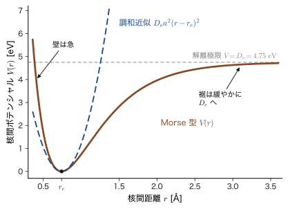
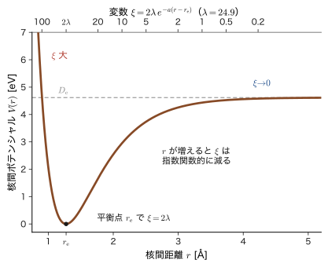
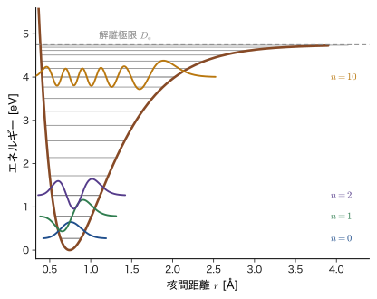
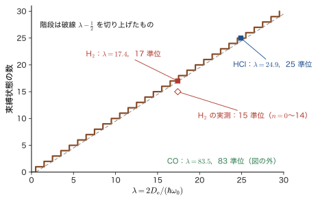
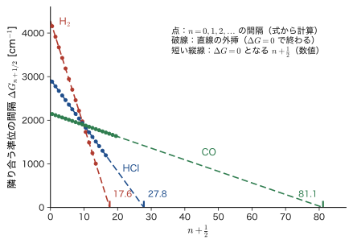
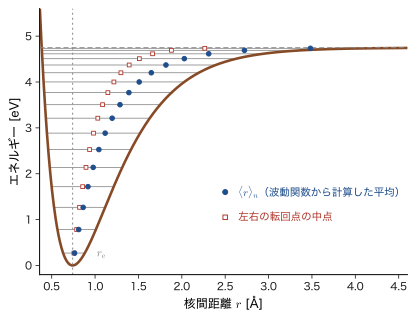

第20章Morse ポテンシャル — 非調和な振動と解離
塩化水素 HCl の気体は，波数 $2886\ \mathrm{cm^{-1}}$（波長 約 $3.5\ \mu\mathrm{m}$）の赤外線をよく吸収する．前章で見たように，これは振動の量子数が $0$ から $1$ に上がる遷移である．調和振動子の準位 $E_n=(n+\tfrac12)\hbar\omega$ は等間隔で，$0\to1$ の間隔がそのまま $\hbar\omega$ になるはずだが，実は $2886\ \mathrm{cm^{-1}}$ は，谷の底の小さな振動から決まる波数（本章では $\omega_{\mathrm e}$ と書く）$2991\ \mathrm{cm^{-1}}$ より約 $105\ \mathrm{cm^{-1}}$ 小さい．その理由が本章の主題である．さらに，スペクトルをもっと丁寧に調べると，ちょうど 2 倍の位置 $2\times2886=5772\ \mathrm{cm^{-1}}$ ではなく，それより $100\ \mathrm{cm^{-1}}$ ほど低い $5668\ \mathrm{cm^{-1}}$ に，はるかに弱い吸収が見つかる．準位が等間隔の調和振動子では，$0\to2$ の遷移はちょうど 2 倍の位置になるはずであり，しかも 1 段ずつしか上がれない選択則からは，そもそも現れないはずである．調和振動子の予言は，分子の実測と，微妙に，しかし確実に食い違っている．
食い違いの原因は，分子の核間ポテンシャルの谷が放物線ではないことにある．谷の底のごく近くでは放物線で近似できる（調和近似）が，谷が深くなるにつれて，(i) 原子どうしがぶつかる側の壁は放物線より急になり，離れる側は放物線よりずっと緩やかになって，やがてポテンシャルは一定値 $D_{\mathrm e}$（解離極限）に近づき，結合が切れてしまう．(ii) その結果，振動のエネルギー準位は，等間隔ではなく，高くなるほど間隔がだんだん狭まり，束縛状態の数は無限ではなく有限個になる．(iii) 振動の中心（平均の核間距離）は，エネルギーが高いほど長い側へずれる（固体の熱膨張の起源）．調和振動子ではこの 3 つはどれも説明できない（古典力学でも，単振動 AD 03 第7章 7.1節 は，ポテンシャルの谷の底に近い小さな振動に対する近似だった）．
これらをまとめて説明する，簡単な式の模型が Morse ポテンシャル（Morse potential）である．アメリカの P. M. Morse（モース）が 1929 年に 2 原子分子の振動準位のために提案した．指数関数 $e^{-ay}$ を 2 か所に含むだけの簡単な式でありながら，Schrödinger 方程式が厳密に解ける．準位は $E_n=\hbar\omega_0(n+\tfrac12)-\dfrac{[\hbar\omega_0(n+\tfrac12)]^2}{4D_{\mathrm e}}$ という $n+\tfrac12$ の 2 次式で，束縛状態は $n\lt\lambda-\tfrac12$ を満たす有限個だけ，波動関数は Laguerre の多項式で書ける．しかもこの式の係数は，分光学者が実測で決める定数 $\omega_{\mathrm e}$，$\omega_{\mathrm e}x_{\mathrm e}$ と直接に結びつく．非調和性の物理を，式を 1 行も飛ばさずに解ける最も簡単な例である．
解き方は，第15章で水素原子の動径方程式を解いたときとまったく同じ道筋をたどる：(i) 変数を取り替えて方程式を整理し，(ii) 両端での振る舞いを因子として取り出し，(iii) 残りをべき級数で解き，(iv) 級数が止まる条件からエネルギーの量子化と Laguerre の陪多項式を得る．違いは，変数の取り替えに指数関数 $\xi=2\lambda e^{-ay}$ を使うことと，Laguerre の次数 $2s$ が整数でなく，しかも $n$ ごとに変わる点である．数学の側面は，姉妹編の大学数学 第46章 46.5 節（モースポテンシャル）でも扱った．本章は，物理として最初から丁寧に解き直し，HCl・H2・CO の実測値と結びつけて，結合の解離と材料の熱膨張までを見通す．
- 調和近似の 3 つの限界（解離できない・準位が等間隔・振動の中心が動かない）を説明し，Morse ポテンシャル $V=D_{\mathrm e}\bigl(1-e^{-a(r-r_{\mathrm e})}\bigr)^2$ の形と，$V''(r_{\mathrm e})=2D_{\mathrm e}a^2=k_0$ から $a=\sqrt{k_0/2D_{\mathrm e}}$ を求められること（HCl・H2・CO の数値）
- 分光学の記号 $\omega_{\mathrm e},\ \omega_{\mathrm e}x_{\mathrm e},\ D_{\mathrm e},\ D_0$ と，本書の $\hbar\omega_0,\ x_{\mathrm e}$，姉妹編（AD 02）の $K,\ D$ との対応
- Schrödinger 方程式を，変数 $\xi=2\lambda e^{-ay}$ の方程式 $\xi^2\psi''+\xi\psi'+\bigl(-\tfrac{\xi^2}{4}+\lambda\xi-s^2\bigr)\psi=0$ に書き換える計算（連鎖律）を 1 行ずつ追えること
- $\psi=\xi^se^{-\xi/2}f$ とおいて Laguerre の陪微分方程式を導き，級数が止まる条件から $s=\lambda-n-\tfrac12$，$E_n$，$\psi_n=N_n\xi^{s}e^{-\xi/2}L_n^{(2s)}(\xi)$ と規格化定数 $N_n^2=a\,n!\,(2\lambda-2n-1)/\Gamma(2\lambda-n)$ を導けること
- 束縛状態が有限個（$n\lt\lambda-\tfrac12$）であることと，$D_{\mathrm e}$（谷の底から）と $D_0$（零点エネルギーを引いた実際の解離エネルギー）の違い．H2 と D2 の $D_0$（$4.478\ \mathrm{eV}$，$4.556\ \mathrm{eV}$）
- 赤外吸収の基音・倍音の位置 $n\omega_{\mathrm e}-n(n+1)\omega_{\mathrm e}x_{\mathrm e}$ と，Birge–Sponer 外挿による $D_{\mathrm e}\approx\omega_{\mathrm e}^2/(4\omega_{\mathrm e}x_{\mathrm e})$ の見積もりと，その精度の限界
- 非調和性の帰結（準位間隔の縮小・零点エネルギーの減少・結合長の伸び・熱膨張）と，Morse 型ポテンシャルの材料計算（分子動力学）での使われ方
もとにしたノート：本章はノートにない内容を補った章である．関連するノート：望月泰英『物理学ノート 量子力学2』 p. 20（余白に描かれた，左の壁が急で右が緩やかな解離曲線），『物理学ノート 量子力学3』 p. 47（核間ポテンシャル $V_{\text{nuc-nuc}}(\bm{R})+\varepsilon_{\text{ele}}(\bm{R})$ の図）．
20.1 調和近似の限界と Morse ポテンシャル
20.1.1 調和振動子では何が足りないか
第19章では，2 原子分子の核間距離 $r$ の振動を，換算質量 $\mu$ の粒子が核間ポテンシャル $V(r)$ の谷の中で動く問題として扱った．谷の底 $r=r_{\mathrm e}$ のまわりで Taylor 展開し，2 次の項だけを残す（調和近似）と，$V\approx\tfrac12k_0(r-r_{\mathrm e})^2$，$k_0=V''(r_{\mathrm e})$ の放物線になり，準位は $E_n=(n+\tfrac12)\hbar\omega_0$（$\omega_0=\sqrt{k_0/\mu}$）で，隣り合う準位の間隔はつねに $\hbar\omega_0$ である．この結果は，谷の底に近い低い準位に対しては，実験とよく合う．しかし，準位が高くなる（振幅が大きくなる）と，次の 3 つの点で，放物線は本物のポテンシャルと決定的に違ってくる．
- 解離できない．放物線は $r\to\pm\infty$ でどこまでも大きくなるので，どれだけエネルギーを与えても結合は切れず，束縛状態は無限個ある．実際の分子は，エネルギーがある値 $D_{\mathrm e}$ を超えると 2 個の原子に分かれる（解離）．核間ポテンシャルは，$r\to\infty$ で一定値に近づく（原子が離れれば互いの力は消える）．
- 準位が等間隔ではない．放物線のばねの硬さは一定だが，本物の谷は，広がる側がゆるやかなので，エネルギーが高いほど「実効的なばね」が柔らかくなり，振動が遅くなる．準位の間隔は，高い準位ほど狭くなる．冒頭の HCl では，$0\to1$ が $2886\ \mathrm{cm^{-1}}$ なのに，$0\to2$ は $2\times2886=5772\ \mathrm{cm^{-1}}$ ではなく $5668\ \mathrm{cm^{-1}}$ である．
- 振動の中心が動かない．放物線は $r_{\mathrm e}$ を中心に左右対称なので，波動関数の確率密度 $\abs{\psi_n}^2$ もすべて偶関数で，平均の核間距離は $n$ によらず $r_{\mathrm e}$ のままである．ところが本物の谷は左右非対称で，エネルギーが高いほど，振動の中心が長い側へずれる．これは固体の熱膨張（温度が上がると原子間距離が伸びる）の起源である（20.6 節）．
壁の側でも，放物線は本物と違う．核が近づくと，原子核どうしの Coulomb 反発と電子雲の重なりで，ポテンシャルは急激に上昇する．Morse ポテンシャルの壁は $D_{\mathrm e}e^{-2ay}$ と指数関数的に立ち上がる（定理20.1）．調和近似に足りない点をひとつずつ補うのが，次に述べる Morse ポテンシャルである．
応用：核間ポテンシャル曲線はどこから来るか
核間ポテンシャル $V(r)$ は，原子核を止めておいて，電子の Schrödinger 方程式を解いたときの電子のエネルギーと，原子核どうしの Coulomb 反発エネルギーの和を，核間距離 $r$ の関数として描いたものである（Born–Oppenheimer 近似．第33章）．第一原理計算（マテリアル計算科学 AD 05，密度汎関数理論 AD 07）で核間距離を少しずつ変えてエネルギーを計算すると，このような谷の形が点の列として得られる．Morse ポテンシャルは，そのような点列を $D_{\mathrm e}$，$a$，$r_{\mathrm e}$ の 3 つの数にまとめる，標準的な当てはめの式である．
20.1.2 Morse ポテンシャルの定義
定義20.1 Morse ポテンシャル
核間距離 $r$ の関数として，
\begin{equation} V(r)=D_{\mathrm e}\Bigl\{1-e^{-a(r-r_{\mathrm e})}\Bigr\}^2 \label{eq:20-morse} \end{equation}で与えられるポテンシャルを Morse ポテンシャルという．$r_{\mathrm e}\gt0$ は平衡核間距離，$D_{\mathrm e}\gt0$ は谷の底から解離極限までの高さ（谷の深さ，または平衡点から測った解離エネルギー），$a\gt0$ は谷の広がりを決める定数（長さの逆数の次元）である．以下，変位を $y\equiv r-r_{\mathrm e}$ と書く．
この式は，1929 年に P. M. Morse が，2 原子分子の振動準位を波動力学で扱うために導入した（文献 2）．原論文は谷の底を $-D$，解離極限を $0$ にとる式 $D\bigl(e^{-2ay}-2e^{-ay}\bigr)$ の形で書いており，姉妹編の AD 02 第46章 46.5 節もこの形を使っている（20.1.5 節）．本書では，分光学で標準的な「谷の底をエネルギーの原点にとる」形 \eqref{eq:20-morse} を使う．両者は，$\bigl(1-e^{-ay}\bigr)^2=1-2e^{-ay}+e^{-2ay}$ と展開すると，$D_{\mathrm e}$ だけ定数がずれているだけであることがわかる．
本書のほかの章と同じく，結合の長さは $r$ と書き，その平衡値からの変位を $y$ と書く（第19章では $x$ と書いた．本章では，変数 $\xi$ など他の記号と並ぶので $y$ を使う．AD 02 の $x$ に当たる）．

20.1.3 形の性質 — 谷の底・解離極限・壁
定理20.1 Morse ポテンシャルの性質
式 \eqref{eq:20-morse} について，次が成り立つ．
(1) $V(r_{\mathrm e})=0$，かつ $V'(r_{\mathrm e})=0$．$V\ge0$ で，$r=r_{\mathrm e}$ が唯一の最小点である．
(2) $r\to\infty$（$y\to+\infty$）で $V\to D_{\mathrm e}$（解離極限）．
(3) $y\to-\infty$（核が近づく側）では $V\approx D_{\mathrm e}e^{-2ay}$ と，指数関数的に急上昇する．$r=0$ での値は有限で $V(0)=D_{\mathrm e}\bigl(1-e^{ar_{\mathrm e}}\bigr)^2$ である．
(4) 谷の底での曲率（ばね定数）は，
\begin{equation} k_0=V''(r_{\mathrm e})=2D_{\mathrm e}a^2 \label{eq:20-k0} \end{equation}(5) 谷の底のまわりの Taylor 展開は，
\begin{equation} V=D_{\mathrm e}\Bigl(a^2y^2-a^3y^3+\tfrac{7}{12}a^4y^4-\cdots\Bigr)=\tfrac12k_0y^2-D_{\mathrm e}a^3y^3+\tfrac{7}{12}D_{\mathrm e}a^4y^4-\cdots \label{eq:20-taylor} \end{equation}導出：定理20.1
(1) $y=0$ を式 \eqref{eq:20-morse} に入れると $e^0=1$ より $V=D_{\mathrm e}(1-1)^2=0$．$V$ は 2 乗の形なので $V\ge0$ で，$V=0$ となるのは $1-e^{-ay}=0$，すなわち $y=0$ のときだけである．導関数は，合成関数の微分で，
$$ V'(r)=D_{\mathrm e}\cdot2\bigl(1-e^{-ay}\bigr)\cdot\frac{\dd}{\dd y}\bigl(1-e^{-ay}\bigr)=2aD_{\mathrm e}\,e^{-ay}\bigl(1-e^{-ay}\bigr) $$（$\dfrac{\dd}{\dd y}e^{-ay}=-ae^{-ay}$ を使った）．$y=0$ で $1-e^{-ay}=0$ なので $V'=0$ である．
(2) $a\gt0$ なので $y\to+\infty$ で $e^{-ay}\to0$，よって $V\to D_{\mathrm e}(1-0)^2=D_{\mathrm e}$．
(3) $y\to-\infty$ では $e^{-ay}\to\infty$ で，$\bigl(1-e^{-ay}\bigr)^2=e^{-2ay}\bigl(e^{ay}-1\bigr)^2\to e^{-2ay}$．$r=0$ すなわち $y=-r_{\mathrm e}$ では $e^{-ay}=e^{ar_{\mathrm e}}$ である．
(4) $V'=2aD_{\mathrm e}\bigl(e^{-ay}-e^{-2ay}\bigr)$ をもう一度 $y$ で微分すると，
$$ V''=2aD_{\mathrm e}\bigl(-ae^{-ay}+2ae^{-2ay}\bigr)=2a^2D_{\mathrm e}\,e^{-ay}\bigl(2e^{-ay}-1\bigr) $$で，$y=0$ とおくと $V''(r_{\mathrm e})=2a^2D_{\mathrm e}(2-1)=2a^2D_{\mathrm e}$ である．
(5) $e^{-ay}=1-ay+\dfrac{a^2y^2}{2}-\dfrac{a^3y^3}{6}+\cdots$ より $1-e^{-ay}=ay-\dfrac{a^2y^2}{2}+\dfrac{a^3y^3}{6}-\cdots$ である．これを 2 乗する．$y^2$ の項は $(ay)^2=a^2y^2$，$y^3$ の項は交差項 $2\cdot ay\cdot\bigl(-\dfrac{a^2y^2}{2}\bigr)=-a^3y^3$，$y^4$ の項は $\bigl(\dfrac{a^2y^2}{2}\bigr)^2+2\cdot ay\cdot\dfrac{a^3y^3}{6}=\dfrac{a^4y^4}{4}+\dfrac{a^4y^4}{3}=\dfrac{7}{12}a^4y^4$ となる．$D_{\mathrm e}$ をかけて式 \eqref{eq:20-taylor} を得る．最初の項は $\tfrac12k_0y^2$ と書けるから，$k_0=2D_{\mathrm e}a^2$ で (4) と一致する．
（導出終わり）
Taylor 展開 \eqref{eq:20-taylor} の 3 次の項 $-D_{\mathrm e}a^3y^3$ は $y\gt0$（長い側）で負，$y\lt0$（短い側）で正である．すなわち，放物線 $\tfrac12k_0y^2$ に対して，長い側は「下げ」，短い側は「上げる」．これが，図20.1 で見た左右の非対称性の最初の現れである．この 3 次の項が，20.6 節で熱膨張の原因として再び現れる．4 次の項 $\tfrac{7}{12}D_{\mathrm e}a^4y^4$ は正で，左右どちらも押し上げる．
注意：$r=0$ での値と，波動関数の存在範囲
式 \eqref{eq:20-morse} は $r=0$ でも有限値 $V(0)=D_{\mathrm e}\bigl(1-e^{ar_{\mathrm e}}\bigr)^2$ をとる（HCl では例題20.1 のとおり約 $4.4\times10^{2}\ \mathrm{eV}$ で，実際の 2 つの原子核が重なったときの反発エネルギーではない）．しかし，束縛状態の波動関数は，$r$ が $r_{\mathrm e}$ から短い側へ $1/a$ の数倍ほど動くとほぼ $0$ になっており，$r=0$ の近くには存在しない（20.2.1 節）．したがって，Morse ポテンシャルは「谷の底の付近から解離極限まで」の範囲だけを扱うモデルであり，$r\to0$ の極限の形は問題にならない．
20.1.4 パラメータ $a$ を分光定数から決める
Morse ポテンシャルの 3 つの定数のうち，平衡核間距離 $r_{\mathrm e}$ は回転スペクトルから，谷の深さ $D_{\mathrm e}$ は解離エネルギーの実測から決まる．最後の $a$ は，振動数から決める．式 \eqref{eq:20-k0} の $k_0=2D_{\mathrm e}a^2$ と，小さな振動の角振動数 $\omega_0=\sqrt{k_0/\mu}$（第19章の $\omega$ と同じ量）を合わせると，
\begin{equation} a=\sqrt{\frac{k_0}{2D_{\mathrm e}}}=\omega_0\sqrt{\frac{\mu}{2D_{\mathrm e}}}\qquad\Longleftrightarrow\qquad \omega_0=a\sqrt{\frac{2D_{\mathrm e}}{\mu}} \label{eq:20-a} \end{equation}である．実験の分光学では，振動を波数（単位 $\mathrm{cm^{-1}}$）で表し，小さな振動の波数を $\omega_{\mathrm e}$ と書く．$\omega_{\mathrm e}$ は波数（第13章・第19章の $\tilde{\nu}$ と同じく波数の単位で表した量）で，角振動数ではない：$\hbar\omega_0=hc\,\omega_{\mathrm e}$，すなわち $\omega_0=2\pi c\,\omega_{\mathrm e}$ である（$c$ は光速）．したがって，実測の $\omega_{\mathrm e}$ と $D_{\mathrm e}$ から $k_0=\mu(2\pi c\,\omega_{\mathrm e})^2$ を求め，式 \eqref{eq:20-a} で $a$ が決まる．
例題20.1 Morse 定数と曲線の性質 — HCl・H2・CO
(1) 式 \eqref{eq:20-morse} から $V(r_{\mathrm e})=0$，$V(\infty)=D_{\mathrm e}$，$V''(r_{\mathrm e})=2D_{\mathrm e}a^2$ を確かめよ．(2) 次の分光定数から，HCl・H2・CO のばね定数 $k_0$，谷の深さ $D_{\mathrm e}$（$\mathrm{J}$ と $\mathrm{eV}$），Morse の $a$（$\mathrm{Å^{-1}}$）を求めよ．換算質量は $\mu(\mathrm{HCl})=0.97959\ \mathrm{u}$（質量数 35 の Cl），$\mu(\mathrm{H_2})=0.50391\ \mathrm{u}$，$\mu(\mathrm{CO})=6.8562\ \mathrm{u}$（$1\ \mathrm{u}=1.66054\times10^{-27}\ \mathrm{kg}$）．$\omega_{\mathrm e}$（$\mathrm{cm^{-1}}$）と $D_{\mathrm e}$（$\mathrm{cm^{-1}}$）は，HCl が $2990.946$，$37244$，H2 が $4401.21$，$38292$，CO が $2169.814$，$90540$．(3) HCl の平衡核間距離を $r_{\mathrm e}=1.2746\ \mathrm{Å}$ として，$r=0$ での $V(0)$ を求めよ．
解答 (1) $y=r-r_{\mathrm e}=0$ では $e^{0}=1$ より $V=D_{\mathrm e}(1-1)^2=0$．$y\to+\infty$ では $e^{-ay}\to0$ より $V\to D_{\mathrm e}(1-0)^2=D_{\mathrm e}$．導関数は $V'=2aD_{\mathrm e}e^{-ay}\bigl(1-e^{-ay}\bigr)$ で，もう一度微分すると $V''=2a^2D_{\mathrm e}e^{-ay}\bigl(2e^{-ay}-1\bigr)$ となり，$y=0$ で $V''(r_{\mathrm e})=2a^2D_{\mathrm e}(2-1)=2a^2D_{\mathrm e}$ である（導出は定理20.1）．
(2) まず単位の換算：$1\ \mathrm{cm^{-1}}$ は $hc\times100\ \mathrm{m^{-1}}=6.62607\times10^{-34}\times2.99792\times10^8\times100=1.98645\times10^{-23}\ \mathrm{J}=1.23984\times10^{-4}\ \mathrm{eV}$ に相当する．3 つの分子とも，(i) $\mu$［$\mathrm{kg}$］，(ii) $\omega_0=2\pi c\,\omega_{\mathrm e}$［$\mathrm{s^{-1}}$］（$\omega_{\mathrm e}$ は $\mathrm{cm^{-1}}$ を $\mathrm{m^{-1}}$ に直すため $100$ 倍する），(iii) $k_0=\mu\omega_0^2$，(iv) $D_{\mathrm e}$［$\mathrm{J}$］，(v) 式 \eqref{eq:20-a} の $a=\sqrt{k_0/(2D_{\mathrm e})}$，の順に計算する．
HCl：$\mu=0.97959\times1.66054\times10^{-27}=1.6266\times10^{-27}\ \mathrm{kg}$．$\omega_0=2\pi\times2.99792\times10^8\times(2990.946\times100)=5.634\times10^{14}\ \mathrm{s^{-1}}$．$k_0=1.6266\times10^{-27}\times(5.634\times10^{14})^2=516.3\ \mathrm{N/m}$．$D_{\mathrm e}=37244\times1.98645\times10^{-23}=7.398\times10^{-19}\ \mathrm{J}=4.618\ \mathrm{eV}$．
$$ a=\sqrt{\frac{516.3}{2\times7.398\times10^{-19}}}=\sqrt{3.489\times10^{20}}=1.868\times10^{10}\ \mathrm{m^{-1}}=1.868\ \mathrm{Å^{-1}}. $$H2：$\mu=0.50391\times1.66054\times10^{-27}=8.368\times10^{-28}\ \mathrm{kg}$．$\omega_0=2\pi\times2.99792\times10^8\times(4401.21\times100)=8.290\times10^{14}\ \mathrm{s^{-1}}$．$k_0=8.368\times10^{-28}\times(8.290\times10^{14})^2=575.1\ \mathrm{N/m}$．$D_{\mathrm e}=38292\times1.98645\times10^{-23}=7.607\times10^{-19}\ \mathrm{J}=4.748\ \mathrm{eV}$．$a=\sqrt{575.1/(2\times7.607\times10^{-19})}=\sqrt{3.780\times10^{20}}=1.944\times10^{10}\ \mathrm{m^{-1}}=1.944\ \mathrm{Å^{-1}}$．
CO：$\mu=6.8562\times1.66054\times10^{-27}=1.1385\times10^{-26}\ \mathrm{kg}$．$\omega_0=2\pi\times2.99792\times10^8\times(2169.814\times100)=4.087\times10^{14}\ \mathrm{s^{-1}}$．$k_0=1.1385\times10^{-26}\times(4.087\times10^{14})^2=1901.9\ \mathrm{N/m}$．$D_{\mathrm e}=90540\times1.98645\times10^{-23}=1.7985\times10^{-18}\ \mathrm{J}=11.23\ \mathrm{eV}$．$a=\sqrt{1901.9/(2\times1.7985\times10^{-18})}=\sqrt{5.287\times10^{20}}=2.299\times10^{10}\ \mathrm{m^{-1}}=2.299\ \mathrm{Å^{-1}}$．
| 分子 | $\mu$ [kg] | $\omega_0$ [$\mathrm{s^{-1}}$] | $k_0$ [N/m] | $D_{\mathrm e}$ [J] | $D_{\mathrm e}$ [eV] | $a$ [$\mathrm{Å^{-1}}$] | $1/a$ [Å] | $r_{\mathrm e}$ [Å] |
|---|---|---|---|---|---|---|---|---|
| H2 | $8.368\times10^{-28}$ | $8.290\times10^{14}$ | 575 | $7.607\times10^{-19}$ | 4.75 | 1.944 | 0.514 | 0.741 |
| HCl | $1.627\times10^{-27}$ | $5.634\times10^{14}$ | 516 | $7.398\times10^{-19}$ | 4.62 | 1.868 | 0.535 | 1.275 |
| CO | $1.139\times10^{-26}$ | $4.087\times10^{14}$ | 1902 | $1.799\times10^{-18}$ | 11.23 | 2.299 | 0.435 | 1.128 |
$1/a$（谷の壁が立ち上がる長さの尺度）は，どの分子でも $0.4$〜$0.5\ \mathrm{Å}$，つまり結合長の $0.4$〜$0.7$ 倍程度である．結合が伸びて $1/a$ 程度になると，調和近似は成り立たなくなる．
(3) $ar_{\mathrm e}=1.868\times1.2746=2.381$，$e^{2.381}=10.81$ なので $V(0)=4.618\times(1-10.81)^2=4.618\times96.2=4.4\times10^2\ \mathrm{eV}$．
20.1.5 記号の対応 — 分光学・本書・姉妹編（AD 02）
Morse ポテンシャルは，分光学の文献，物理の教科書，数学の教科書で，少しずつ違う記号で書かれる．本書の記号と，分光学（Herzberg など）の記号，姉妹編 AD 02 第46章 46.5 節の記号の対応を，表20.2 にまとめておく．
| 量 | 本書 | 分光学 | AD 02 第46章 |
|---|---|---|---|
| 谷の深さ（平衡点から） | $D_{\mathrm e}$ | $D_{\mathrm e}$ | $K$（谷の底が $-K$） |
| 谷の広がりの定数（長さの逆数） | $a$ | $a$（$\beta$ と書く文献もある） | $D$ |
| 換算質量（振動する粒子の質量） | $\mu$ | $\mu$ | $m$ |
| 平衡点からの変位 | $y=r-r_{\mathrm e}$ | $r-r_{\mathrm e}$ | $x$ |
| 小さな振動 | $\omega_0$（角振動数），$\hbar\omega_0=hc\,\omega_{\mathrm e}$ | $\omega_{\mathrm e}$（波数 $\mathrm{cm^{-1}}$） | $\omega_0=D\sqrt{2K/m}$ |
| 非調和定数 | $x_{\mathrm e}=\dfrac{\hbar\omega_0}{4D_{\mathrm e}}$ | $\omega_{\mathrm e}x_{\mathrm e}=\dfrac{\omega_{\mathrm e}^2}{4D_{\mathrm e}}$（$\mathrm{cm^{-1}}$） | $(n+\tfrac12)^2$ の係数 $\dfrac{(\hbar\omega_0)^2}{4K}$ |
| 振動量子数 | $n=0,1,2,\dots$ | $v$（または $\nu$） | $n$ |
| 無次元のパラメータ | $\lambda=\dfrac{\sqrt{2\mu D_{\mathrm e}}}{a\hbar}$ | （用いない） | $\lambda=\dfrac{\sqrt{2mK}}{\hbar D}$ |
| 波動関数の遠方での減衰の指数 | $s$ | （用いない） | $\alpha$ |
| 変数 | $\xi=2\lambda e^{-ay}$ | （用いない） | $u=2\lambda e^{-Dx}$ |
| 基底状態からの解離エネルギー | $D_0$ | $D_0$ | （定義していない） |
エネルギーの原点が違う点に注意しよう．本書と分光学は谷の底（平衡点）を $0$ にとるので $V\ge0$ で，束縛状態のエネルギーは $0\lt E\lt D_{\mathrm e}$ の範囲にある．AD 02 は解離極限を $0$ にとるので $V\ge-K$ で，束縛状態は $-K\lt E\lt0$ である．両者は，$E_{\mathrm{AD02}}=E-D_{\mathrm e}$ という定数のずれだけである．
例題20.2 AD 02 の形との対応
AD 02 第46章の Morse ポテンシャルは $V_{\mathrm A}(x)=K\bigl(e^{-2Dx}-2e^{-Dx}\bigr)$ である．(1) $K=D_{\mathrm e}$，$D=a$，$x=y$ とおくと，$V_{\mathrm A}=V-D_{\mathrm e}$ であることを示せ．(2) AD 02 の小さな振動の角振動数 $\omega_0=D\sqrt{2K/m}$ が，式 \eqref{eq:20-a} と同じになることを確かめよ．
解答 (1) 式 \eqref{eq:20-morse} を展開すると，$V=D_{\mathrm e}\bigl(1-2e^{-ay}+e^{-2ay}\bigr)=D_{\mathrm e}+D_{\mathrm e}\bigl(e^{-2ay}-2e^{-ay}\bigr)$．$K=D_{\mathrm e}$，$D=a$，$x=y$ とおくと 2 項目は $V_{\mathrm A}$ そのものなので，$V=D_{\mathrm e}+V_{\mathrm A}$，すなわち $V_{\mathrm A}=V-D_{\mathrm e}$ である．最小値は $V_{\mathrm A}(0)=K(1-2)=-K=-D_{\mathrm e}$，解離極限は $V_{\mathrm A}(\infty)=0$ である．
(2) $\omega_0=D\sqrt{2K/m}$ に $K=D_{\mathrm e}$，$D=a$，$m\to\mu$ を代入すると $a\sqrt{2D_{\mathrm e}/\mu}$ となり，式 \eqref{eq:20-a} と一致する．H2 では AD 02 の $D$ が $1.944\ \mathrm{Å^{-1}}$，$K$ が $4.748\ \mathrm{eV}$ に当たる．
注意：この章の文字の使い方
(i) $\lambda$ は，この章では Morse のパラメータ $\lambda=\sqrt{2\mu D_{\mathrm e}}/(a\hbar)$（無次元の数）であり，波長ではない．(ii) $s$ は波動関数の減衰の指数であり，スピン量子数ではない．(iii) $n$ は振動の量子数で $n=0,1,2,\dots$ と数える（調和振動子と同じ．箱の粒子や水素原子とは違う）．(iv) $\omega_{\mathrm e}$，$\omega_{\mathrm e}x_{\mathrm e}$ は分光学の慣習で，単位が $\mathrm{cm^{-1}}$ の波数である．同じ「赤外の波数」を，第13章・第19章では $\tilde{\nu}$ と書いた．調和振動子の近似では $\omega_{\mathrm e}$ がそれらに当たる．$D_{\mathrm e}$，$D_0$ を波数で書くときは，エネルギーを $hc$ で割った値を同じ記号で書く．(v) 結合長は $r$，平衡からの変位は $y$ である．
20.2 Schrödinger 方程式の変数変換 — 指数関数を変数にする
20.2.1 相対運動の方程式
第19章で見たように，2 つの原子核の運動は，重心の運動と，換算質量 $\mu$ をもつ 1 個の粒子の相対運動に分離できる．相対運動は，核間ポテンシャル $V(r)$ の中を動く粒子の運動である．回転がない状態（回転の量子数が $0$）を考えると，動径方向の波動関数 $R(r)$ に対して $\psi(r)\equiv rR(r)$ とおくことで，Schrödinger 方程式は 1 次元と同じ形になる（第14章 14.4 節，第15章 15.5 節の $R=S/r$ と同じ手続き）．変位 $y=r-r_{\mathrm e}$ を独立変数にして書くと，
\begin{equation} -\frac{\hbar^2}{2\mu}\frac{\dd^2\psi}{\dd y^2}+D_{\mathrm e}\bigl(1-e^{-ay}\bigr)^2\psi=E\,\psi \label{eq:20-tise} \end{equation}である．$\psi$ の条件は，$r=0$（$y=-r_{\mathrm e}$）で $\psi=0$，$r\to\infty$（$y\to+\infty$）で $\psi\to0$，そして規格化 $\int\abs{\psi}^2\dd y=1$ である．
なぜ $y$ の範囲を $-\infty$ まで広げてよいのか
厳密には $y$ は $-r_{\mathrm e}$ 以上の範囲でしか動けず，$y=-r_{\mathrm e}$ で $\psi=0$ という境界条件がつく．しかし，Morse ポテンシャルの壁は指数関数的に急なので，束縛状態の波動関数は，壁の中では非常に速く小さくなる．次の 20.2.4 節のとおり，$y\to-\infty$ で $\psi\propto e^{-\xi/2}$（$\xi=2\lambda e^{-ay}$）と，「指数関数の指数関数」で減衰する．たとえば HCl の基底状態では，$r=0$ での $\xi$ の値は $2\lambda e^{ar_{\mathrm e}}=539$（例題20.3）で，波動関数の因子 $\xi^se^{-\xi/2}$（$s=24.4$．20.3 節）は $\xi^s\approx10^{67}$，$e^{-\xi/2}\approx10^{-117}$ の積で約 $10^{-50}$ になる．これは，波動関数が最大になる $\xi=2s$ での値（約 $10^{31}$）の $10^{-81}$ 倍にすぎない．したがって，境界条件を $y=-r_{\mathrm e}$ ではなく $y\to-\infty$ に置き換えても，準位も波動関数も実質的にまったく変わらない．そこで，以下では $-\infty\lt y\lt\infty$ で式 \eqref{eq:20-tise} を解く．
注意：回転を無視している
回転している分子では，遠心力ポテンシャル $\hbar^2J(J+1)/(2\mu r^2)$（$J$ は回転の量子数．第21章，第22章）が式 \eqref{eq:20-tise} に加わり，回転定数が振動の状態に少し依存する（振動回転相互作用）．この章では，回転が $J=0$ の状態だけを考え，この効果は扱わない．
20.2.2 無次元のパラメータ $\lambda$ と $s$
式 \eqref{eq:20-tise} の両辺に $-2\mu/\hbar^2$ をかけ，移項して整理すると，
$$ \frac{\dd^2\psi}{\dd y^2}=\frac{2\mu}{\hbar^2}\Bigl\{V(y)-E\Bigr\}\psi,\qquad V(y)-E=(D_{\mathrm e}-E)-2D_{\mathrm e}e^{-ay}+D_{\mathrm e}e^{-2ay} $$である（$\bigl(1-e^{-ay}\bigr)^2=1-2e^{-ay}+e^{-2ay}$ を使った）．両辺を $a^2$ で割ると，$y$ の微分に対応する量が無次元になる：
$$ \frac{1}{a^2}\frac{\dd^2\psi}{\dd y^2}=\Bigl\{\frac{2\mu(D_{\mathrm e}-E)}{\hbar^2a^2}-2\cdot\frac{2\mu D_{\mathrm e}}{\hbar^2a^2}\,e^{-ay}+\frac{2\mu D_{\mathrm e}}{\hbar^2a^2}\,e^{-2ay}\Bigr\}\psi $$そこで，係数をまとめて次のように定義する．
定義20.2 Morse のパラメータ $\lambda$ と減衰の指数 $s$
\begin{equation} \lambda\equiv\frac{\sqrt{2\mu D_{\mathrm e}}}{a\hbar}\ \ (\lambda\gt0),\qquad s^2\equiv\frac{2\mu\,(D_{\mathrm e}-E)}{\hbar^2a^2}\ \ (s\gt0) \label{eq:20-lam-s} \end{equation}（$s$ は $0\lt E\lt D_{\mathrm e}$ の束縛状態を考えて，正の平方根をとる．$\lambda$ は波長ではない．$s$ はスピンではない．20.1.5 節の注意を参照）．
この 2 つは，どちらも無次元である．実際，$2\mu D_{\mathrm e}$ の次元は $\mathrm{kg}\cdot\mathrm{J}=\mathrm{kg^2\,m^2\,s^{-2}}$ で，平方根は運動量の次元 $\mathrm{kg\,m\,s^{-1}}$ をもつ．分母の $a\hbar$ の次元も $\mathrm{m^{-1}}\cdot\mathrm{J\,s}=\mathrm{kg\,m\,s^{-1}}$ で，やはり運動量である．したがって $\lambda$ は運動量どうしの比で，無次元になる．$s$ も，$\sqrt{2\mu(D_{\mathrm e}-E)}$ が運動量の次元をもつので同様に無次元である．
$\lambda$ には，簡単な物理的意味がある．小さな振動の角振動数 $\omega_0=a\sqrt{2D_{\mathrm e}/\mu}$（式 \eqref{eq:20-a}）を使うと，
\begin{equation} \frac{2D_{\mathrm e}}{\hbar\omega_0}=\frac{2D_{\mathrm e}}{\hbar a}\sqrt{\frac{\mu}{2D_{\mathrm e}}}=\frac{\sqrt{2\mu D_{\mathrm e}}}{a\hbar}=\lambda \label{eq:20-lam-hw} \end{equation}である（$2D_{\mathrm e}\sqrt{\mu/(2D_{\mathrm e})}=\sqrt{2\mu D_{\mathrm e}}$ を使った）．すなわち，
で，$\lambda$ は「谷の深さが，調和近似の零点エネルギー $\tfrac12\hbar\omega_0$ の何倍か」を表す．これは，谷の中にどれだけ多くの準位が入るかの目安になる（20.4 節）．最後の等号の $x_{\mathrm e}=\hbar\omega_0/(4D_{\mathrm e})$ は，20.3.4 節で現れる非調和定数である．例題20.1 の値から，H2 は $\lambda=17.4$，HCl は $\lambda=24.9$，CO は $\lambda=83.5$ である（20.4 節）．
また，$s$ の定義 \eqref{eq:20-lam-s} をエネルギーについて解くと，
\begin{equation} E=D_{\mathrm e}-\frac{\hbar^2a^2}{2\mu}\,s^2 \label{eq:20-E-s} \end{equation}である．$s$ が小さい（$E$ が解離極限 $D_{\mathrm e}$ に近い）ほど，波動関数の遠方での減衰がゆっくりになる．事実，$y\to+\infty$ では $V\to D_{\mathrm e}$ なので $\psi''\approx\dfrac{2\mu(D_{\mathrm e}-E)}{\hbar^2}\psi=(as)^2\psi$ となり，$\psi\propto e^{-asy}$ である．すなわち，$as$ は有限井戸の外側の減衰定数 $\kappa$（第11章 11.1節）と同じ量である．
定義 \eqref{eq:20-lam-s} を用いると，式 \eqref{eq:20-tise} は次のように書ける．
\begin{equation} \frac{1}{a^2}\frac{\dd^2\psi}{\dd y^2}=\Bigl(s^2-2\lambda^2e^{-ay}+\lambda^2e^{-2ay}\Bigr)\psi \label{eq:20-tise-y} \end{equation}20.2.3 変数を $\xi=2\lambda e^{-ay}$ にとる
イメージ：なぜ「指数関数」を新しい変数にするのか
式 \eqref{eq:20-tise-y} の右辺には，$y$ が $e^{-ay}$ と $e^{-2ay}=(e^{-ay})^2$ の形でしか現れない．そこで $e^{-ay}$ そのものを新しい変数にとれば，係数が変数のべき（多項式）になり，べき級数（Frobenius）の方法（第13章 13.3 節，第15章 15.5 節）が使える．係数の $2\lambda$ は，あとで式がきれいになるように決めておく．$e^{-ay}$ は $y$ が大きい（核が離れた）ほど小さく，$y\to+\infty$ が新しい変数の $0$ に，壁の側 $y\to-\infty$ が $+\infty$ に対応するので，「無限遠 $\leftrightarrow$ 原点」が入れ替わる．
新しい変数を，次で定義する．
\begin{equation} \xi\equiv2\lambda\,e^{-ay}\qquad(\xi\gt0) \label{eq:20-xi} \end{equation}$y=0$（平衡点）では $\xi=2\lambda$，$y\to+\infty$ で $\xi\to0$，$y\to-\infty$ で $\xi\to\infty$ である（図20.2）．

$\psi$ を $y$ の関数から $\xi$ の関数に書き直そう．連鎖律（合成関数の微分）を使う．まず $\xi$ の微分は，
$$ \frac{\dd\xi}{\dd y}=2\lambda\cdot(-a)\,e^{-ay}=-a\,\xi $$である．したがって，
$$ \frac{\dd\psi}{\dd y}=\frac{\dd\xi}{\dd y}\frac{\dd\psi}{\dd\xi}=-a\,\xi\,\frac{\dd\psi}{\dd\xi} $$となる．もう一度 $y$ で微分するときは，積 $\xi\cdot\dfrac{\dd\psi}{\dd\xi}$ の微分（積の微分法）と，$\dfrac{\dd\psi}{\dd\xi}$ 自身の $y$ 微分（もう一度連鎖律）が必要である：
$$ \begin{aligned} \frac{\dd^2\psi}{\dd y^2}&=-a\left\{\frac{\dd\xi}{\dd y}\,\frac{\dd\psi}{\dd\xi}+\xi\,\frac{\dd}{\dd y}\!\left(\frac{\dd\psi}{\dd\xi}\right)\right\} =-a\left\{(-a\xi)\frac{\dd\psi}{\dd\xi}+\xi\cdot\frac{\dd\xi}{\dd y}\frac{\dd^2\psi}{\dd\xi^2}\right\}\\ &=-a\left\{-a\xi\frac{\dd\psi}{\dd\xi}-a\xi^2\frac{\dd^2\psi}{\dd\xi^2}\right\} =a^2\left(\xi^2\frac{\dd^2\psi}{\dd\xi^2}+\xi\frac{\dd\psi}{\dd\xi}\right) \end{aligned} $$を得る（1 行目で $\dfrac{\dd}{\dd y}\Bigl(\dfrac{\dd\psi}{\dd\xi}\Bigr)=\dfrac{\dd\xi}{\dd y}\dfrac{\dd^2\psi}{\dd\xi^2}$ を，2 行目で $\dfrac{\dd\xi}{\dd y}=-a\xi$ を使った）．まとめると，
\begin{equation} \frac{\dd}{\dd y}=-a\,\xi\frac{\dd}{\dd\xi},\qquad \frac{\dd^2}{\dd y^2}=a^2\left(\xi^2\frac{\dd^2}{\dd\xi^2}+\xi\frac{\dd}{\dd\xi}\right) \label{eq:20-chain} \end{equation}である．この公式は，$\psi=\xi^p$ という簡単な関数で確かめられる．$\xi^p=(2\lambda)^pe^{-pay}$ だから左辺は $\dfrac{\dd^2\psi}{\dd y^2}=p^2a^2\psi$．右辺は $a^2\bigl\{p(p-1)+p\bigr\}\xi^p=a^2p^2\psi$ で，一致する．
式 \eqref{eq:20-chain} を式 \eqref{eq:20-tise-y} に代入する．左辺は $\xi^2\psi''+\xi\psi'$（ここで $'$ は $\xi$ による微分）になる．右辺は，$e^{-ay}=\xi/(2\lambda)$ より，
$$ 2\lambda^2e^{-ay}=2\lambda^2\cdot\frac{\xi}{2\lambda}=\lambda\xi,\qquad \lambda^2e^{-2ay}=\lambda^2\cdot\frac{\xi^2}{4\lambda^2}=\frac{\xi^2}{4} $$となるので，$\bigl(s^2-\lambda\xi+\tfrac{\xi^2}{4}\bigr)\psi$ である．移項すれば，次の定理を得る．
定理20.2 Morse ポテンシャルの $\xi$ の方程式
変数 \eqref{eq:20-xi} を用いると，式 \eqref{eq:20-tise} は
\begin{equation} \xi^2\frac{\dd^2\psi}{\dd\xi^2}+\xi\frac{\dd\psi}{\dd\xi}+\Bigl(-\frac{\xi^2}{4}+\lambda\xi-s^2\Bigr)\psi=0 \label{eq:20-xi-ode} \end{equation}となる．ここで $\lambda=\sqrt{2\mu D_{\mathrm e}}/(a\hbar)$，$s^2=2\mu(D_{\mathrm e}-E)/(\hbar^2a^2)$ である．エネルギー $E$ は $s$ の中だけに入っている．
2 つの定数 $D_{\mathrm e},\ a$ と質量 $\mu$，$\hbar$ が，無次元の $\lambda$ 1 つにまとまったことに注目しよう．波動関数の形（$\xi$ の関数として）と準位の相対的な並び方は，$\lambda$ だけで決まる．分子ごとの違いは $\lambda$（谷が零点エネルギーの何倍深いか）と，長さのスケール $1/a$ の 2 つで表される．
数学の道具：この方程式は Whittaker の方程式
$\psi=\xi^{-1/2}W$ とおくと，式 \eqref{eq:20-xi-ode} は $W''+\Bigl(-\dfrac14+\dfrac{\lambda}{\xi}+\dfrac{\tfrac14-s^2}{\xi^2}\Bigr)W=0$ となる．これは Whittaker の方程式（合流型超幾何関数の方程式の 1 つ）の形で，Coulomb 問題の動径方程式（第15章）と同じ仲間である．本章では特殊関数の名前を使わず，Frobenius の級数から Laguerre の多項式を直接得る（20.3 節）．AD 02 第46章 46.5.1 節の定理46.9 は，$u=\xi$，$\alpha=s$ とおいた同じ方程式である．
20.2.4 両端での振る舞い — $\xi\to\infty$ と $\xi\to0$
水素原子の動径方程式（第15章 15.5.2 節）と同様に，方程式 \eqref{eq:20-xi-ode} を解く前に，両端での解の振る舞いを調べて，因子として取り出しておく．
(i) $\xi\to\infty$（$y\to-\infty$，壁の内側）．式 \eqref{eq:20-xi-ode} の項のうち，$\xi^2\psi''$ と $-\tfrac{\xi^2}{4}\psi$ が $\xi^2$ のオーダーで最も大きい（$\xi\psi'$，$\lambda\xi\psi$，$s^2\psi$ はそれより小さい）ので，
$$ \xi^2\psi''-\frac{\xi^2}{4}\psi\approx0\quad\Longrightarrow\quad\psi''\approx\frac14\psi\quad\Longrightarrow\quad\psi\approx C_1e^{\xi/2}+C_2e^{-\xi/2} $$となる．$e^{+\xi/2}$ は $\xi\to\infty$ で発散するので，規格化できない．したがって $\psi\approx C_2\,e^{-\xi/2}$ を選ぶ．
(ii) $\xi\to0$（$y\to+\infty$，解離の側）．$\xi\to0$ では $\xi^2$ の項と $\lambda\xi$ の項が，定数項 $-s^2$ に比べて無視できるから，
$$ \xi^2\psi''+\xi\psi'-s^2\psi\approx0 $$である．これは $\psi=\xi^p$ とおくと解ける（$\xi^p$ の微分のべきの次数がそろう，等次元型の方程式）：$p(p-1)+p-s^2=p^2-s^2=0$ より $p=\pm s$．$\psi=\xi^{-s}=(2\lambda)^{-s}e^{+say}$ は $y\to+\infty$ で発散する（解離した状態で粒子が無限遠に「増える」）ので不適．$\psi=\xi^{s}=(2\lambda)^{s}e^{-say}$ が，$y\to+\infty$ で減衰する解である．このとき，$s\gt0$ が減衰を保証している．
この 2 つを合わせて，波動関数を
\begin{equation} \psi(\xi)=\xi^{s}e^{-\xi/2}f(\xi) \label{eq:20-ansatz} \end{equation}とおくのが自然な方針になる．$f(\xi)$ は，両端で $\xi^s$，$e^{-\xi/2}$ を取り除いた残りの，「おだやかな関数」である．次節でこれを，べき級数で決める．
例題20.3 HCl の $\xi$ の値 — どの核間距離がどの $\xi$ か
HCl（$\lambda=24.90$，$a=1.868\ \mathrm{Å^{-1}}$，$r_{\mathrm e}=1.2746\ \mathrm{Å}$）について，(1) 平衡点 $r=r_{\mathrm e}$ での $\xi$，(2) $\xi=1$ となる核間距離 $r$，(3) $r=0$ での $\xi$ と $e^{-\xi/2}$ の大きさを求めよ．
解答 (1) $y=0$ では $\xi=2\lambda=2\times24.90=49.8$ である．
(2) $\xi=2\lambda e^{-ay}=1$ より $e^{-ay}=1/(2\lambda)$，すなわち $y=\dfrac{\ln(2\lambda)}{a}=\dfrac{\ln49.8}{1.868}=\dfrac{3.908}{1.868}=2.09\ \mathrm{Å}$．よって $r=1.2746+2.09=3.37\ \mathrm{Å}$ である（結合長の約 2.6 倍．ここで $\xi$ はほぼ $1$ で，波動関数の遠方の形 $\xi^s$ に移り変わる）．
(3) $r=0$ は $y=-1.2746\ \mathrm{Å}$ で，$ay=-2.381$，$e^{-ay}=e^{2.381}=10.81$．$\xi=49.8\times10.81=538.6$ である．$e^{-\xi/2}=e^{-269.3}=10^{-116.9}\approx10^{-117}$ で，波動関数は $r=0$ でまったく存在しない．
20.3 束縛状態の厳密解 — Laguerre の陪多項式とエネルギー準位
この節が本章の中心である．方程式 \eqref{eq:20-xi-ode} を，前節の漸近形の因子 $\xi^se^{-\xi/2}$ を取り出してべき級数で解き，級数が止まる条件からエネルギーの量子化を得る．手順全体を図20.3 に示す．水素原子（第15章）で通った道筋と，ほとんど同じである（Morse ポテンシャルの厳密解は，文献 9 にも問題として解かれている）．
20.3.1 $f(\xi)$ の方程式を導く
式 \eqref{eq:20-ansatz} $\psi=\xi^se^{-\xi/2}f(\xi)$ を式 \eqref{eq:20-xi-ode} に代入する．計算を見通しよくするため，$g(\xi)\equiv\xi^se^{-\xi/2}$ とおき，$\psi=gf$ の微分を積の微分法で作る．$g$ の対数微分は，
$$ \frac{g'}{g}=\frac{s}{\xi}-\frac12\equiv q(\xi),\qquad g'=qg,\qquad g''=(qg)'=q'g+qg'=(q'+q^2)\,g,\qquad q'=-\frac{s}{\xi^2} $$である．したがって，積の微分法より，
$$ \psi'=g'f+gf'=g\,(f'+qf),\qquad \psi''=g''f+2g'f'+gf''=g\,\bigl\{f''+2qf'+(q^2+q')f\bigr\} $$となる．これらを式 \eqref{eq:20-xi-ode} の左辺 $\xi^2\psi''+\xi\psi'+\bigl(-\tfrac{\xi^2}{4}+\lambda\xi-s^2\bigr)\psi$ に入れ，共通因子 $g$ でくくる：
$$ g\Bigl[\ \xi^2f''+\bigl(2q\xi^2+\xi\bigr)f'+\Bigl\{\xi^2(q^2+q')+\xi q-\frac{\xi^2}{4}+\lambda\xi-s^2\Bigr\}f\ \Bigr]=0. $$ここで各係数を，$q=\dfrac{s}{\xi}-\dfrac12$ を使って計算する．$f'$ の係数は $2q\xi^2+\xi=2s\xi-\xi^2+\xi=\xi\,(2s+1-\xi)$ である．$f$ の係数は，項ごとに，
$$ \xi^2q^2=\xi^2\Bigl(\frac{s^2}{\xi^2}-\frac{s}{\xi}+\frac14\Bigr)=s^2-s\xi+\frac{\xi^2}{4},\quad \xi^2q'=-s,\quad \xi q=s-\frac{\xi}{2} $$なので，
$$ \Bigl(s^2-s\xi+\frac{\xi^2}{4}\Bigr)+(-s)+\Bigl(s-\frac{\xi}{2}\Bigr)-\frac{\xi^2}{4}+\lambda\xi-s^2=\Bigl(\lambda-s-\frac12\Bigr)\xi $$（$s^2$ どうし，$\tfrac{\xi^2}{4}$ どうし，$-s$ と $+s$ がそれぞれ打ち消し合い，$\xi$ の項だけが残った）．$g\ne0$ で，全体を $\xi$ で割ると，次を得る．
定理20.3 $f(\xi)$ の方程式
$\psi=\xi^se^{-\xi/2}f(\xi)$ とおくと，式 \eqref{eq:20-xi-ode} は
\begin{equation} \xi\frac{\dd^2f}{\dd\xi^2}+\bigl(2s+1-\xi\bigr)\frac{\dd f}{\dd\xi}+\Bigl(\lambda-s-\frac12\Bigr)f=0 \label{eq:20-f-ode} \end{equation}となる．
この形は，水素原子の動径方程式から得た式（第15章の Laguerre の陪微分方程式 15.5.7 節）と同じ型である．第15章では，式中の数 $2l+1$ が整数だったが，ここでは $2s$ が一般の正の実数である点が違う．なお，$\lambda$ と $s$ はまだ独立な数として残っている．$s$ はエネルギー $E$ を通じて決まる量なので，$f$ の方程式が「まともな」（$\xi\to\infty$ で暴れない）解をもつように $s$ を決めることが，エネルギーの量子化になる．
20.3.2 べき級数解と量子化条件
$f(\xi)$ を，$\xi=0$ のまわりの Frobenius 級数 $f=\displaystyle\sum_{k=0}^\infty c_k\xi^{k+\rho}$（$c_0\ne0$）と仮定して，方程式 \eqref{eq:20-f-ode} に代入する．まず最低次の項を調べる．$\xi f''$ と $(2s+1)f'$ の最低次は $\xi^{\rho-1}$ で，その係数は $c_0\bigl\{\rho(\rho-1)+(2s+1)\rho\bigr\}=c_0\,\rho\,(\rho+2s)$ である．これが $0$ になる条件（決定方程式）から，$\rho=0$ または $\rho=-2s$ を得る（$2s$ が整数のときは，$\rho=-2s$ の解に対数項が加わることがあるが，どちらにしても $\xi\to0$ で $\xi^{-s}$ 型に発散するので除外される．詳しくは大学数学 第39章 39.4 節）．$\rho=-2s$ は $\psi=\xi^{s}\cdot\xi^{-2s}\cdots=\xi^{-s}\cdots$ に対応し，20.2.4 節で除外した $y\to+\infty$ で発散する解である．したがって $\rho=0$，すなわち
$$ f(\xi)=\sum_{k=0}^{\infty}c_k\,\xi^k $$である．これを式 \eqref{eq:20-f-ode} に代入する．便宜上 $\nu\equiv\lambda-s-\tfrac12$ とおく．各項は，
$$ \xi f''=\sum_{k=0}^\infty k(k-1)c_k\xi^{k-1},\quad (2s+1)f'=\sum_{k=0}^\infty(2s+1)k\,c_k\xi^{k-1},\quad -\xi f'=-\sum_{k=0}^\infty k\,c_k\xi^{k},\quad \nu f=\sum_{k=0}^\infty\nu\,c_k\xi^k $$である．最初の 2 つで，和の番号を $k\to k+1$ とずらす（$\xi^{k-1}$ が $\xi^k$ になる．$k=0$ の項は係数が $0$ なので落とせる）と，$\xi^k$ の係数は $(k+1)k\,c_{k+1}+(2s+1)(k+1)c_{k+1}=(k+1)(k+2s+1)c_{k+1}$ となる．すべての項を集めた $\xi^k$ の係数が $0$ になる：
$$ (k+1)(k+2s+1)\,c_{k+1}-k\,c_k+\nu\,c_k=0 $$すなわち，次の漸化式を得る．
\begin{equation} c_{k+1}=\frac{k-\nu}{(k+1)(k+2s+1)}\,c_k\qquad(k=0,1,2,\dots) \label{eq:20-recur} \end{equation}この級数が無限に続くとどうなるかを調べよう．$k\to\infty$ では，$c_{k+1}/c_k\approx\dfrac{k}{k\cdot k}=\dfrac1k$ で，これは指数関数のべき級数 $e^{\xi}=\sum\xi^k/k!$ の隣り合う係数の比 $\dfrac{1/(k+1)!}{1/k!}=\dfrac{1}{k+1}$ とほとんど同じである．したがって級数が無限に続けば，$\xi\to\infty$ で $f\sim e^{\xi}$（べきの因子を除く）となり，
$$ \psi=\xi^se^{-\xi/2}f\ \sim\ \xi^{\,\text{べき}}\,e^{+\xi/2}\ \longrightarrow\ \infty\qquad(\xi\to\infty) $$と，20.2.4 節の (i) で除外した発散する解になってしまう．規格化できる解が存在するためには，級数が途中で止まって多項式にならなければならない．漸化式 \eqref{eq:20-recur} で級数が止まるのは，ある番号 $k=n$ で分子 $k-\nu$ が $0$ になるときだけである．$k-\nu=0$ となる $k$ が非負の整数 $n$ であるためには，
\begin{equation} \nu=\lambda-s-\frac12=n\qquad(n=0,1,2,\dots) \label{eq:20-quant} \end{equation}でなければならない．このとき $c_{n+1}=0$ となり，以降の係数もすべて $0$ なので，$f$ は $n$ 次の多項式になる．式 \eqref{eq:20-quant} を $s$ について解くと，
\begin{equation} s=\lambda-n-\frac12\qquad(n=0,1,2,\dots) \label{eq:20-s-n} \end{equation}である．$s$ は，$s^2=2\mu(D_{\mathrm e}-E)/(\hbar^2a^2)$ を通じて $E$ に結びついていたから，ここでエネルギーの量子化が起こった．ただし，$s$ は $s\gt0$ と定義した（20.2.2 節）ので，式 \eqref{eq:20-s-n} が意味をもつのは，右辺が正のとき，すなわち $n\lt\lambda-\tfrac12$ の場合だけである（20.4 節）．
考察：級数が止まる条件が，なぜエネルギーを決めるのか
式 \eqref{eq:20-f-ode} の係数 $\nu=\lambda-s-\tfrac12$ は，$E$（$s$）に依存する．任意の $E$ に対して，$\xi\to0$ で「よい」解（$\xi^s$）は 1 つ，$\xi\to\infty$ で「よい」解（$e^{-\xi/2}$）も 1 つ存在する．一般には，この 2 つは同じ関数にならない（左端から出発して右端の条件を満たすとは限らない）．同じ関数になるのは，級数が止まって $f$ が多項式になる特別な $E$ のときだけである．これは，井戸の問題（第10章・第11章）で，両端の境界条件を同時に満たすエネルギーだけが許される，という構造と同じである．
20.3.3 Laguerre の陪多項式 — $f=L_n^{(2s)}(\xi)$
条件 \eqref{eq:20-quant} のもとで，式 \eqref{eq:20-f-ode} は，
\begin{equation} \xi\frac{\dd^2f}{\dd\xi^2}+\bigl(\alpha+1-\xi\bigr)\frac{\dd f}{\dd\xi}+n\,f=0\qquad(\alpha\equiv2s) \label{eq:20-lag-eq} \end{equation}となる．これは Laguerre の陪微分方程式（associated Laguerre differential equation）で，多項式解が Laguerre の陪多項式（associated Laguerre polynomial）$L_n^{(\alpha)}(\xi)$ である（姉妹編 大学数学 第41章 41.5）．本書は，第15章 15.7.2 節で示した現代の規約（scipy.special.genlaguerre と同じ）を使う：
ここで $\alpha$ は $\alpha\gt-1$ の実数でよく，二項係数は Gamma 関数で書いた（$\alpha$ が整数のときは通常の二項係数）．低次の多項式は，
$$ L_0^{(\alpha)}=1,\qquad L_1^{(\alpha)}(\xi)=1+\alpha-\xi,\qquad L_2^{(\alpha)}(\xi)=\tfrac12(\alpha+1)(\alpha+2)-(\alpha+2)\xi+\tfrac12\xi^2 $$である．漸化式 \eqref{eq:20-recur} から得られる多項式が，式 \eqref{eq:20-lag} と同じ関数であることは，係数の比を見ればわかる．式 \eqref{eq:20-lag} の $\xi^j$ の係数を $l_j$ とおくと，$\dbinom{n+\alpha}{n-j-1}\Big/\dbinom{n+\alpha}{n-j}=\dfrac{n-j}{\alpha+j+1}$ より，
$$ \frac{l_{j+1}}{l_j}=-\frac{1}{j+1}\cdot\frac{n-j}{\alpha+j+1}=\frac{j-n}{(j+1)(j+\alpha+1)} $$で，これは式 \eqref{eq:20-recur} で $\nu=n$，$2s=\alpha$ とおいた $c_{k+1}/c_k=\dfrac{k-n}{(k+1)(k+\alpha+1)}$ と一致する．したがって，定数倍を除いて $f(\xi)=L_n^{(2s)}(\xi)$ である．
注意：第15章と違い，Laguerre の次数 $2s$ は整数でなく，$n$ ごとに変わる
水素原子では，Laguerre 陪多項式の「上の指標」$2l+1$ は，量子数 $l$ で決まる整数で，同じ $l$ をもつ状態では同じだった．ここでは $\alpha=2s=2\lambda-2n-1$ が一般には整数でなく，しかも準位 $n$ ごとに違う値をとる．この違いのため，(i) 旧規約（第15章の公式15.3 が扱った整数 $\alpha$ の場合）ではなく，非整数の $\alpha$ も扱える現代の規約 \eqref{eq:20-lag} が必要になり，(ii) 異なる $n$ の波動関数の直交性（20.3.5 節）は，Laguerre の直交性だけからは出てこない．
$L_n^{(\alpha)}(\xi)$ は $\xi\gt0$ に，ちょうど $n$ 個の異なる零点をもつ（直交多項式の一般的な性質）．したがって，$n$ 番目の準位の波動関数 $\psi_n$ には，ちょうど $n$ 個の節がある．基底状態 $n=0$ には節がない．これは，調和振動子や無限井戸の $n$ 番目の状態と同じ性質である．
20.3.4 エネルギー準位
式 \eqref{eq:20-s-n} を式 \eqref{eq:20-E-s}，$E=D_{\mathrm e}-\dfrac{\hbar^2a^2}{2\mu}s^2$ に代入すると，
\begin{equation} E_n=D_{\mathrm e}-\frac{\hbar^2a^2}{2\mu}\Bigl(\lambda-n-\frac12\Bigr)^2 \label{eq:20-En0} \end{equation}である．これを $n+\tfrac12$ について展開して整理しよう．$\bigl(\lambda-(n+\tfrac12)\bigr)^2=\lambda^2-2\lambda(n+\tfrac12)+(n+\tfrac12)^2$ であり，3 つの係数を，$\lambda$ の定義と $\omega_0=a\sqrt{2D_{\mathrm e}/\mu}$ を使って書き直す．
- $\dfrac{\hbar^2a^2}{2\mu}\lambda^2=\dfrac{\hbar^2a^2}{2\mu}\cdot\dfrac{2\mu D_{\mathrm e}}{\hbar^2a^2}=D_{\mathrm e}$．
- $\dfrac{\hbar^2a^2}{2\mu}\cdot2\lambda=\dfrac{\hbar^2a^2}{\mu}\cdot\dfrac{\sqrt{2\mu D_{\mathrm e}}}{a\hbar}=\hbar a\sqrt{\dfrac{2D_{\mathrm e}}{\mu}}=\hbar\omega_0$．
- $\dfrac{\hbar^2a^2}{2\mu}=\dfrac{(\hbar\omega_0)^2}{4D_{\mathrm e}}$（$(\hbar\omega_0)^2=\hbar^2a^2\cdot\dfrac{2D_{\mathrm e}}{\mu}$ の両辺を $4D_{\mathrm e}$ で割ると $\dfrac{(\hbar\omega_0)^2}{4D_{\mathrm e}}=\dfrac{\hbar^2a^2}{2\mu}$ となる）．
したがって，$E_n=D_{\mathrm e}-\bigl\{D_{\mathrm e}-\hbar\omega_0(n+\tfrac12)+\tfrac{(\hbar\omega_0)^2}{4D_{\mathrm e}}(n+\tfrac12)^2\bigr\}$ で，$D_{\mathrm e}$ が消えて次の定理を得る．
定理20.4 Morse ポテンシャルの束縛状態のエネルギー
谷の底を原点にとると，Morse ポテンシャルの束縛状態のエネルギーは，
\begin{equation} E_n=\hbar\omega_0\Bigl(n+\frac12\Bigr)-\frac{\bigl[\hbar\omega_0(n+\tfrac12)\bigr]^2}{4D_{\mathrm e}}=\hbar\omega_0\Bigl\{\Bigl(n+\frac12\Bigr)-x_{\mathrm e}\Bigl(n+\frac12\Bigr)^2\Bigr\},\qquad x_{\mathrm e}\equiv\frac{\hbar\omega_0}{4D_{\mathrm e}} \label{eq:20-En} \end{equation}である．ここで $\omega_0=a\sqrt{2D_{\mathrm e}/\mu}=\sqrt{k_0/\mu}$，$n=0,1,2,\dots$ で，$n$ は $n\lt\lambda-\tfrac12$ を満たす（定理20.6）．$x_{\mathrm e}$ は 非調和定数とよばれ，式 \eqref{eq:20-lam} より $x_{\mathrm e}=1/(2\lambda)$ である．
この結果は，$n+\tfrac12$ の 2 次式だけで，3 次以上の項がない．これは Morse ポテンシャルの特別な性質（厳密解が 2 次式になる）で，実際の分子ではさらに高次の項が加わる．次の点を確かめておこう．
- 次元：第 2 項は $\dfrac{(\text{エネルギー})^2}{\text{エネルギー}}$ で，エネルギーの次元をもつ．$x_{\mathrm e}=\hbar\omega_0/(4D_{\mathrm e})$ は無次元である．
- 調和振動子への極限：$D_{\mathrm e}\to\infty$（$x_{\mathrm e}\to0$，谷が無限に深い）とすると，第 2 項が消えて $E_n=\hbar\omega_0(n+\tfrac12)$ となり，調和振動子の準位に戻る．低い $n$ では $x_{\mathrm e}(n+\tfrac12)\ll1$ なので，第 2 項は小さな補正である．
- 準位間隔：$\bigl(n+\tfrac32\bigr)^2-\bigl(n+\tfrac12\bigr)^2=2(n+1)$ より，
である．間隔は $n$ の 1 次式で，$n$ が増すごとに $2x_{\mathrm e}\hbar\omega_0$ ずつ一定の割合で狭くなる．調和振動子（$x_{\mathrm e}=0$）は，つねに $\hbar\omega_0$ の等間隔である．
- 上限：$E_n=D_{\mathrm e}-\dfrac{\hbar^2a^2}{2\mu}s^2\lt D_{\mathrm e}$ なので，すべての束縛状態のエネルギーは解離極限より低い．
分光学では，エネルギーを波数 $\mathrm{cm^{-1}}$ で表した項値（term value）$G(n)=E_n/(hc)$ を使う．$\hbar\omega_0=hc\,\omega_{\mathrm e}$ であるから，
\begin{equation} G(n)=\omega_{\mathrm e}\Bigl(n+\frac12\Bigr)-\omega_{\mathrm e}x_{\mathrm e}\Bigl(n+\frac12\Bigr)^2,\qquad \omega_{\mathrm e}x_{\mathrm e}=\frac{\omega_{\mathrm e}^2}{4D_{\mathrm e}} \label{eq:20-Gn} \end{equation}である（$D_{\mathrm e}$ は $\mathrm{cm^{-1}}$ で表した値）．$\omega_{\mathrm e}x_{\mathrm e}$ は $\omega_{\mathrm e}$ と $x_{\mathrm e}$ の積で，やはり波数の単位をもつ．式 \eqref{eq:20-Gn} は，分光学の教科書（文献 4）でおなじみの形である．ただし，実際の分子では，$\omega_{\mathrm e}x_{\mathrm e}$ は，測定された準位から決めるパラメータとして使われ，Morse ポテンシャルから予言される値 $\omega_{\mathrm e}^2/(4D_{\mathrm e})$ とは，少し違う値になる（20.5 節）．AD 02 の形（エネルギーの原点が解離極限）に直すと，式 \eqref{eq:20-En0} より $E_n-D_{\mathrm e}=-D_{\mathrm e}\bigl(1-\tfrac{n+1/2}{\lambda}\bigr)^2$ である（演習20.7）．
例題20.4 HCl の振動準位 — 調和振動子との比較
HCl の分光定数を $\omega_{\mathrm e}=2990.946\ \mathrm{cm^{-1}}$，$\omega_{\mathrm e}x_{\mathrm e}=52.8186\ \mathrm{cm^{-1}}$ として，(1) 非調和定数 $x_{\mathrm e}$ を求めよ．(2) 式 \eqref{eq:20-Gn} から $G(0),G(1),G(2),G(3)$ と，隣り合う準位の間隔 $G(n+1)-G(n)$（$n=0,1,2$）を求め，調和振動子の値 $\omega_{\mathrm e}(n+\tfrac12)$，$\omega_{\mathrm e}$ と比べよ．(3) 零点エネルギーは，調和振動子の $\tfrac12\omega_{\mathrm e}$ よりどれだけ小さいか．
解答 (1) $x_{\mathrm e}=\dfrac{\omega_{\mathrm e}x_{\mathrm e}}{\omega_{\mathrm e}}=\dfrac{52.8186}{2990.946}=0.01766$．
(2) $G(n)=2990.946\,(n+\tfrac12)-52.8186\,(n+\tfrac12)^2$ に入れる．$n=0$：$1495.473-52.8186\times0.25=1495.473-13.205=1482.27$．$n=1$：$4486.419-52.8186\times2.25=4486.419-118.842=4367.58$．$n=2$：$7477.365-52.8186\times6.25=7477.365-330.116=7147.25$．$n=3$：$10468.311-52.8186\times12.25=10468.311-647.028=9821.28$（すべて $\mathrm{cm^{-1}}$）．間隔は $G(1)-G(0)=2885.31$，$G(2)-G(1)=2779.67$，$G(3)-G(2)=2674.03$ で，隣り合う間隔が毎回 $2\omega_{\mathrm e}x_{\mathrm e}=105.64\ \mathrm{cm^{-1}}$ ずつ小さくなる（式 \eqref{eq:20-spacing}）．調和振動子では間隔は $\omega_{\mathrm e}=2990.95\ \mathrm{cm^{-1}}$ で一定なので，$0\to1$ の間隔でも約 $3.5\ \%$ 小さい．冒頭の実測の基音 $2886\ \mathrm{cm^{-1}}$ は $2885.31$ とよく合う．
(3) 零点エネルギーは $G(0)=\tfrac12\omega_{\mathrm e}-\tfrac14\omega_{\mathrm e}x_{\mathrm e}=1495.47-13.20=1482.27\ \mathrm{cm^{-1}}$．調和振動子の値より $\tfrac14\omega_{\mathrm e}x_{\mathrm e}=13.2\ \mathrm{cm^{-1}}$（約 $0.9\ \%$）小さい．（この量は，20.4 節の $D_0$ の式に現れる．）
20.3.5 波動関数と規格化
準位 $n$ の波動関数は，式 \eqref{eq:20-ansatz}，\eqref{eq:20-s-n} と $f=L_n^{(2s)}$ から，
\begin{equation} \psi_n(y)=N_n\,\xi^{\lambda-n-\frac12}\,e^{-\xi/2}\,L_n^{(2\lambda-2n-1)}(\xi),\qquad\xi=2\lambda e^{-ay} \label{eq:20-psi} \end{equation}である．定数 $N_n$ を規格化 $\displaystyle\int_{-\infty}^{\infty}\abs{\psi_n}^2\dd y=1$ から決める．$\xi=2\lambda e^{-ay}$ より $\dd\xi=-a\xi\,\dd y$，すなわち $\dd y=-\dfrac{\dd\xi}{a\xi}$ で，$y:-\infty\to\infty$ は $\xi:\infty\to0$ に対応する．積分の向きの反転で符号が打ち消されて，
$$ 1=\int_{-\infty}^{\infty}\psi_n^2\dd y=\frac{N_n^2}{a}\int_0^{\infty}\xi^{2s-1}e^{-\xi}\bigl[L_n^{(2s)}(\xi)\bigr]^2\dd\xi\qquad(s=\lambda-n-\tfrac12) $$となる（$\psi_n^2=N_n^2\xi^{2s}e^{-\xi}[L_n^{(2s)}]^2$ で，さらに $1/\xi$ がつくので $\xi^{2s-1}$）．右辺の積分は，次の公式で計算できる．
数学の道具：Laguerre 陪多項式の規格化積分（重み $x^{\alpha-1}e^{-x}$）
Laguerre 陪多項式の母関数と，重み $x^{\beta}e^{-x}$ での直交関係 $\displaystyle\int_0^\infty x^{\beta}e^{-x}L_j^{(\beta)}L_k^{(\beta)}\dd x=\dfrac{\Gamma(k+\beta+1)}{k!}\delta_{jk}$ は，大学数学 第41章 41.5 節にある．$\alpha\gt0$，$n=0,1,2,\dots$ に対して，
\begin{equation} \int_0^\infty x^{\alpha-1}e^{-x}\bigl[L_n^{(\alpha)}(x)\bigr]^2\dd x=\frac{\Gamma(n+\alpha+1)}{n!\,\alpha} \label{eq:20-lagnorm} \end{equation}が成り立つ．証明：Laguerre 陪多項式の母関数 $\displaystyle\sum_{n=0}^\infty L_n^{(\alpha)}(x)t^n=(1-t)^{-\alpha-1}\exp\Bigl(-\dfrac{xt}{1-t}\Bigr)$ から，
$$ \sum_{n}L_n^{(\alpha)}t^n=\frac{1}{1-t}\cdot(1-t)^{-\alpha}\exp\Bigl(-\frac{xt}{1-t}\Bigr)=\Bigl(\sum_{m=0}^\infty t^m\Bigr)\Bigl(\sum_{k=0}^\infty L_k^{(\alpha-1)}t^k\Bigr) $$である．$t^n$ の係数を比べると $L_n^{(\alpha)}=\displaystyle\sum_{k=0}^{n}L_k^{(\alpha-1)}$ を得る．重み $x^{\alpha-1}e^{-x}$ での直交性 $\displaystyle\int_0^\infty x^{\alpha-1}e^{-x}L_j^{(\alpha-1)}L_k^{(\alpha-1)}\dd x=\dfrac{\Gamma(k+\alpha)}{k!}\delta_{jk}$ を使うと，
$$ \int_0^\infty x^{\alpha-1}e^{-x}\bigl[L_n^{(\alpha)}\bigr]^2\dd x=\sum_{k=0}^n\frac{\Gamma(k+\alpha)}{k!} $$である．この和は $\displaystyle\sum_{k=0}^n\frac{\Gamma(k+\alpha)}{k!}=\frac{\Gamma(n+\alpha+1)}{\alpha\,n!}$ に等しい（$n$ についての帰納法：$n=0$ で $\Gamma(\alpha)=\Gamma(\alpha+1)/\alpha$．$n\to n+1$ で $\dfrac{\Gamma(n+\alpha+1)}{\alpha\,n!}+\dfrac{\Gamma(n+\alpha+1)}{(n+1)!}=\dfrac{\Gamma(n+\alpha+1)}{(n+1)!}\cdot\dfrac{n+1+\alpha}{\alpha}=\dfrac{\Gamma(n+\alpha+2)}{\alpha\,(n+1)!}$）．なお，第15章 15.7.3 節の積分 $\int e^{-x}x^{\alpha+1}[L_k^{(\alpha)}]^2\dd x$ は，重みが違う別の公式である．
式 \eqref{eq:20-lagnorm} で $\alpha=2s=2\lambda-2n-1$ とおくと，$n+\alpha+1=2\lambda-n$ より，積分は $\dfrac{\Gamma(2\lambda-n)}{n!\,(2\lambda-2n-1)}$ になる．したがって，
$$ 1=\frac{N_n^2}{a}\cdot\frac{\Gamma(2\lambda-n)}{n!\,(2\lambda-2n-1)}\quad\Longrightarrow\quad N_n^2=\frac{a\;n!\,(2\lambda-2n-1)}{\Gamma(2\lambda-n)} $$を得る．まとめよう．
定理20.5 Morse ポテンシャルの束縛状態の波動関数
規格化された束縛状態の波動関数は，
\begin{equation} \psi_n(y)=N_n\,\xi^{\lambda-n-\frac12}e^{-\xi/2}L_n^{(2\lambda-2n-1)}(\xi),\qquad N_n^2=\frac{a\,\,n!\,(2\lambda-2n-1)}{\Gamma(2\lambda-n)},\qquad\xi=2\lambda e^{-ay} \label{eq:20-N} \end{equation}である（$N_n\gt0$ にとる．$L_n^{(\alpha)}(0)\gt0$ なので，$\psi_n$ は $y\to+\infty$ で正になる）．$\psi_n$ は $n$ 個の節をもち，異なる $n$ どうしは直交する：$\displaystyle\int\psi_m\psi_n\dd y=\delta_{mn}$．
$N_n^2$ は，$a$ を含む（$\psi^2\dd y$ が無次元だから，$\psi$ は長さの $-1/2$ 乗の次元をもつことに対応する）．最も低い状態は，$n=0$ の $\psi_0=N_0\xi^{\lambda-1/2}e^{-\xi/2}$，$N_0^2=\dfrac{a\,(2\lambda-1)}{\Gamma(2\lambda)}$ であり，$n=1$ は $L_1^{(2s)}=1+2s-\xi=2\lambda-2-\xi$ を使って $\psi_1=N_1\xi^{\lambda-3/2}e^{-\xi/2}(2\lambda-2-\xi)$ である．
注意：異なる準位の直交性は Laguerre の直交性からは出ない
水素原子では，同じ $l$ をもつ異なる $n$ の動径関数は，同じ Laguerre の指標 $2l+1$ をもつので，重み付きの Laguerre の直交性から直交がわかる．ここでは，$\psi_m$ と $\psi_n$ の $\xi^{s_m}L_m^{(2s_m)}$ と $\xi^{s_n}L_n^{(2s_n)}$ の $s$ が違う（$s_n=\lambda-n-\tfrac12$）ので，Laguerre の直交性は使えない．$\psi_m$ と $\psi_n$ の直交性は，$\hat{H}$ がエルミート演算子で，異なる固有値に属する固有関数が直交する，という一般的な事実（第9章 9.6 節）から出る．次の例題で，具体的に確かめる．
例題20.5 $\lambda=5/2$ の Morse ポテンシャル — 手計算で全部確かめる
$\lambda=\dfrac52$ の場合について，(1) 束縛状態を求めよ．(2) $E_n/D_{\mathrm e}$ を計算せよ．(3) $\psi_0$，$\psi_1$ を書き下し，規格化と直交性を確かめよ．
解答 (1) $s=\lambda-n-\tfrac12=2-n\gt0$ より $n=0,1$ の 2 つだけである（$n=2$ は $s=0$ で不可）．$s_0=2$，$s_1=1$．
(2) 式 \eqref{eq:20-En0} と $\dfrac{\hbar^2a^2}{2\mu}=\dfrac{D_{\mathrm e}}{\lambda^2}$ より $E_n=D_{\mathrm e}\bigl(1-\dfrac{s^2}{\lambda^2}\bigr)$ である．$E_0=D_{\mathrm e}\bigl(1-\tfrac{4}{6.25}\bigr)=0.36\,D_{\mathrm e}$，$E_1=D_{\mathrm e}\bigl(1-\tfrac{1}{6.25}\bigr)=0.84\,D_{\mathrm e}$．式 \eqref{eq:20-En} でも，$\hbar\omega_0=2D_{\mathrm e}/\lambda=0.8D_{\mathrm e}$ より $E_0=0.4D_{\mathrm e}-\tfrac{(0.4D_{\mathrm e})^2}{4D_{\mathrm e}}=0.36D_{\mathrm e}$ と一致する．
(3) $L_0^{(4)}=1$，$L_1^{(2)}=3-\xi$ を使って，$\psi_0=N_0\,\xi^2e^{-\xi/2}$，$\psi_1=N_1\,\xi\,e^{-\xi/2}(3-\xi)$．規格化定数は式 \eqref{eq:20-N} から $N_0^2=\dfrac{a\cdot4}{\Gamma(5)}=\dfrac{a}{6}$，$N_1^2=\dfrac{a\cdot1!\cdot2}{\Gamma(4)}=\dfrac{a}{3}$．積分公式 $\int_0^\infty\xi^ke^{-\xi}\dd\xi=k!$ を使って直接確かめる：
$$ \int\psi_0^2\dd y=\frac{N_0^2}{a}\int_0^\infty\xi^3e^{-\xi}\dd\xi=\frac16\cdot3!=1,\qquad \int\psi_1^2\dd y=\frac{N_1^2}{a}\int_0^\infty\xi\,(3-\xi)^2e^{-\xi}\dd\xi=\frac13\bigl(9\cdot1!-6\cdot2!+3!\bigr)=\frac13\cdot3=1 $$（$\dd y=\dd\xi/(a\xi)$ を使った．$\xi(3-\xi)^2=9\xi-6\xi^2+\xi^3$）．直交性は，
$$ \int\psi_0\psi_1\dd y=\frac{N_0N_1}{a}\int_0^\infty\xi^2(3-\xi)e^{-\xi}\dd\xi=\frac{N_0N_1}{a}\bigl(3\cdot2!-3!\bigr)=0 $$となる．$\psi_1$ の節は $\xi=3$（$e^{-ay}=3/(2\lambda)=0.6$）の 1 個である．
20.3.6 波動関数の形と，平均の結合長
基底状態は $\psi_0=N_0\xi^{\lambda-1/2}e^{-\xi/2}$ で，$\xi=2\lambda e^{-ay}$ を戻して書くと，
$$ \psi_0(y)\ \propto\ \exp\Bigl\{-\Bigl(\lambda-\frac12\Bigr)ay-\lambda\,e^{-ay}\Bigr\} $$である．$y\to+\infty$ では $e^{-(\lambda-1/2)ay}$ と，普通の指数関数でゆっくり減衰する（裾が長い）．一方，$y\to-\infty$ では $e^{-\lambda e^{-ay}}$ と，「指数関数の指数関数」で非常に急に減衰する．調和振動子の基底状態（Gauss 型 $e^{-x^2/2}$，左右対称）と比べて，左の壁が急で右に裾を引く非対称な形になる（図20.4）．

この非対称性は，平均の結合長 $\expval{r}$ が $r_{\mathrm e}$ からずれることを意味する．基底状態の $\expval{y}_0=\expval{r-r_{\mathrm e}}$ は，Gamma 関数の微分を使って厳密に計算できる．$\psi_0^2\dd y=\dfrac{N_0^2}{a}\xi^{2s-1}e^{-\xi}\dd\xi$（$s=\lambda-\tfrac12$）で，$y=-\dfrac1a\ln\dfrac{\xi}{2\lambda}$ なので，
$$ \expval{y}_0=-\frac1a\Bigl\{\expval{\ln\xi}_0-\ln2\lambda\Bigr\},\qquad \expval{\ln\xi}_0=\frac{\int_0^\infty\ln\xi\;\xi^{2s-1}e^{-\xi}\dd\xi}{\int_0^\infty\xi^{2s-1}e^{-\xi}\dd\xi}=\frac{\dd}{\dd z}\ln\Gamma(z)\Big|_{z=2s} $$である（$\Gamma(z)=\int_0^\infty\xi^{z-1}e^{-\xi}\dd\xi$ を $z$ で微分すると被積分関数に $\ln\xi$ がつく）．$\dfrac{\dd}{\dd z}\ln\Gamma(z)\equiv\operatorname{dig}(z)$ をディガンマ関数（digamma function）という（文献では $\psi(z)$ と書かれ，scipy.special.digamma がこの関数である．波動関数と紛れるので本書では dig と書く）．$2s=2\lambda-1$ だから，
である．最後の近似は，漸近展開 $\operatorname{dig}(z)=\ln z-\dfrac{1}{2z}-\dfrac{1}{12z^2}+\cdots$（$z\gg1$．Stirling の公式（大学数学 第32章 32.3 節）の対数を微分したもの）の初めの 2 項と $\ln\dfrac{2\lambda}{2\lambda-1}\approx\dfrac{1}{2\lambda}$ を使うと，$\dfrac1a\Bigl(\dfrac{1}{2\lambda}+\dfrac{1}{2(2\lambda-1)}\Bigr)\approx\dfrac{1}{a}\Bigl(\dfrac{1}{2\lambda}+\dfrac{1}{4\lambda}\Bigr)=\dfrac{3}{4a\lambda}$ である．平均の位置は，零点振動の中でさえ，長い側へ $3x_{\mathrm e}/(2a)$ だけずれる．エネルギーの高い準位ほど，このずれは大きくなる（20.6 節）．
例題20.6 基底状態の平均結合長のずれ — HCl・H2・CO
式 \eqref{eq:20-ymean} を使って，HCl（$\lambda=24.90$，$a=1.868\ \mathrm{Å^{-1}}$），H2（$\lambda=17.40$，$a=1.944\ \mathrm{Å^{-1}}$），CO（$\lambda=83.45$，$a=2.299\ \mathrm{Å^{-1}}$）の基底状態の平均結合長のずれ $\expval{r}_0-r_{\mathrm e}$ を求めよ．近似式 $3/(4a\lambda)$ とも比べよ．
解答 $z\equiv2\lambda-1$ とおくと，$\ln(2\lambda)-\operatorname{dig}(z)=\ln\Bigl(1+\dfrac1z\Bigr)+\bigl\{\ln z-\operatorname{dig}(z)\bigr\}$ で，$z\gg1$ での展開 $\operatorname{dig}(z)=\ln z-\dfrac{1}{2z}-\dfrac{1}{12z^2}+\cdots$ を使うと，
$$ a\expval{y}_0=\ln\Bigl(1+\frac1z\Bigr)+\frac{1}{2z}+\frac{1}{12z^2}-\cdots $$である．HCl：$z=48.81$，$\dfrac1z=0.020488$，$\ln(1+\tfrac1z)=0.020281$，$\dfrac{1}{2z}=0.010244$，$\dfrac{1}{12z^2}=0.000035$ で，和は $0.030560$．$\expval{y}_0=0.030560/1.868=0.0164\ \mathrm{Å}$（約 $1.6\ \mathrm{pm}$）．近似式は $\dfrac{3}{4\times1.868\times24.90}=0.0161\ \mathrm{Å}$．H2：$z=33.80$，$\ln(1+\tfrac1z)=0.029155$，$\dfrac{1}{2z}=0.014792$，$\dfrac{1}{12z^2}=0.000073$，和 $0.044020$，$\expval{y}_0=0.044020/1.944=0.0226\ \mathrm{Å}$（近似式は $0.0222\ \mathrm{Å}$）．CO：$z=165.9$，和は $0.006009+0.003014+0.000003=0.009026$，$\expval{y}_0=0.009026/2.299=0.0039\ \mathrm{Å}$（近似式は $0.0039\ \mathrm{Å}$）．
軽くて結合が柔らかい H2 が最も大きくずれ（結合長 $0.741\ \mathrm{Å}$ の約 $3\ \%$），重くて硬い CO は最も小さい（$0.0039/1.128=0.3\ \%$）．ずれは $\lambda$ が大きい（$x_{\mathrm e}=1/(2\lambda)$ が小さい）ほど小さい．
20.3.7 数値対角化との比較
厳密解 \eqref{eq:20-En} が正しいことを，Schrödinger 方程式を直接，数値的に解いて確かめてみよう．どんなポテンシャルでも使える数値解法として，座標を細かい格子に区切って 2 階微分を差分で近似し，得られる行列を対角化する方法がある（第10章の箱の粒子でも，同じ考え方が使える）．
例題20.7 数値対角化との比較 — $D_{\mathrm e}=12$，$a=1$，$\mu=\hbar=1$
単位を $\mu=\hbar=a=1$ にとり，$D_{\mathrm e}=12$ の Morse ポテンシャル $V=12\,(1-e^{-y})^2$ の固有値を，公式 \eqref{eq:20-En} と比べよ．
解答 このとき $\lambda=\sqrt{2\mu D_{\mathrm e}}/(a\hbar)=\sqrt{24}=4.899$，$\hbar\omega_0=a\hbar\sqrt{2D_{\mathrm e}/\mu}=\sqrt{24}=4.899$ である．束縛条件 $n\lt\lambda-\tfrac12=4.399$ より，束縛状態は $n=0,1,2,3,4$ の 5 個である．公式 \eqref{eq:20-En} は $E_n=4.899\,(n+\tfrac12)-\dfrac{\{4.899\,(n+\tfrac12)\}^2}{48}$ である．
数値対角化の手順は次のとおりである．(i) 区間 $-3\le y\le50$ を間隔 $h=10^{-3}$ の格子点 $y_j$（約 $5.3\times10^4$ 点）に区切る．左端の壁は $V(-3)=12(e^{3}-1)^2\approx4.4\times10^{3}$ と十分に高く，右端 $y=50$ は，解離極限の近くの状態でも波動関数が十分小さくなる距離である．両端では $\psi=0$ とおく．(ii) 2 階微分を 3 点の差分 $\psi''(y_j)\approx\{\psi_{j+1}-2\psi_j+\psi_{j-1}\}/h^2$ で近似する．$\mu=\hbar=1$ の Hamilton 演算子 $-\tfrac12\psi''+V\psi$ は，行列 $H_{jj}=\dfrac{1}{h^2}+V(y_j)$，$H_{j,j\pm1}=-\dfrac{1}{2h^2}$（それ以外は $0$）の 3 重対角行列になる．(iii) この行列の低い固有値を求める．Python では次の数行でよい．
import numpy as np from scipy.linalg import eigh_tridiagonal h = 1.0e-3 y = np.arange(-3.0, 50.0 + h/2, h) V = 12.0*(1.0 - np.exp(-y))**2 diag = 1.0/h**2 + V off = -0.5/h**2*np.ones(len(y) - 1) E = eigh_tridiagonal(diag, off, select='i', select_range=(0, 5))[0] print(E) # 低い方から 6 個の固有値
得られる固有値を，公式と並べると次の表になる．
| $n$ | 公式 \eqref{eq:20-En} | 数値対角化 | $s=\lambda-n-\tfrac12$ |
|---|---|---|---|
| 0 | 2.324490 | 2.324489 | 4.399 |
| 1 | 6.223469 | 6.223467 | 3.399 |
| 2 | 9.122449 | 9.122446 | 2.399 |
| 3 | 11.021428 | 11.021425 | 1.399 |
| 4 | 11.920408 | 11.920407 | 0.399 |
小数点以下 5 桁まで一致する（3 点差分の誤差は $h^2$ に比例するので，$h=10^{-2}$ では 4 桁の一致になる）．6 番目の固有値は $12.0026$ で，$D_{\mathrm e}=12$ を超える．これは束縛状態ではなく，解離した状態（連続状態）を有限の区間に閉じ込めて離散化したもので，値は区間の広さに依存する．公式に $n=5$ を代入すると $E_5=11.819$ となり，$E_4=11.920$ より小さいが，$n=5$ は $s=\lambda-5.5=-0.601\lt0$ で束縛の条件を満たさず，この値には意味がない（20.4 節）．
20.4 束縛状態の数と解離エネルギー — $D_{\mathrm e}$ と $D_0$
20.4.1 束縛状態は有限個しかない
調和振動子には，$n=0,1,2,\dots$ と無限個の準位があった．Morse ポテンシャルでは，そうならない．式 \eqref{eq:20-s-n} $s=\lambda-n-\tfrac12$ の $s$ は，20.2.2 節で $s\gt0$（束縛状態，$E\lt D_{\mathrm e}$）と定義したので，$n$ に上限がつく．
定理20.6 束縛状態の数
Morse ポテンシャルの束縛状態は，
\begin{equation} n\lt\lambda-\frac12\qquad(n=0,1,2,\dots) \label{eq:20-nmax} \end{equation}を満たす整数 $n$ だけである．したがって，束縛状態の数は $N_{\mathrm b}=\lceil\lambda-\tfrac12\rceil$（$\lceil\ \rceil$ は，その数以上の最小の整数，すなわち切り上げ）である．$\lambda-\tfrac12$ が整数でないときは，$N_{\mathrm b}=\lfloor\lambda+\tfrac12\rfloor$（$\lfloor\ \rfloor$ は切り捨て），すなわち $\lambda$ に最も近い整数である．
なぜ $s\gt0$ が必要なのかを，波動関数の言葉で言い直そう．$\psi_n\propto\xi^{s}e^{-\xi/2}L_n^{(2s)}$ の $\xi\to0$（$y\to+\infty$）での振る舞いは $\xi^s=(2\lambda)^se^{-say}$ であり，$s\gt0$ のときだけ，$y\to+\infty$ で減衰して規格化できる．$s\le0$ に対応する $n\ge\lambda-\tfrac12$ では，波動関数は $y\to\infty$ で減衰しない（$s=0$ は $E=D_{\mathrm e}$ で，遠方で一定値に近づく．$s\lt0$ を形式的に代入した $\xi^s$ は発散する）．$E\ge D_{\mathrm e}$ では，2 つの原子は互いに遠く離れることができ（解離），エネルギーは連続的な値をとる（連続状態）．連続状態は規格化できず，散乱状態としての性質をもつ（第12章 12.4 節の，障壁を越えるエネルギーの状態と同じ種類の波動関数である）．
この結果は，式 \eqref{eq:20-spacing} からも見える．準位の間隔は $E_{n+1}-E_n=\hbar\omega_0\bigl(1-\tfrac{n+1}{\lambda}\bigr)$ と，$n$ とともに一定の割合で減り，$n+1=\lambda$ でちょうど $0$ になる．準位は，$\hbar\omega_0$ の間隔から出発して，上に行くにつれて間隔が直線的に $0$ に向かって狭まる．間隔が平均して $\tfrac12\hbar\omega_0$ ならば，深さ $D_{\mathrm e}$ の谷に入る準位の数は $D_{\mathrm e}/(\tfrac12\hbar\omega_0)=\lambda$ ほどである．これが，$\lambda$ が束縛状態の数のおよその目安であることの理由である（図20.5）．

例題20.8 HCl の束縛状態の数と最上位の準位
HCl（$\omega_{\mathrm e}=2990.946\ \mathrm{cm^{-1}}$，$D_{\mathrm e}=37244\ \mathrm{cm^{-1}}$）の Morse 模型の束縛状態の数を求め，最も高い 2 つの準位が解離極限からどれだけ下にあるかを見積もれ．
解答 $\lambda=\dfrac{2D_{\mathrm e}}{\hbar\omega_0}=\dfrac{2D_{\mathrm e}}{\omega_{\mathrm e}}=\dfrac{2\times37244}{2990.946}=24.90$ である．束縛条件 $n\lt24.90-0.5=24.40$ より，$n=0,1,\dots,24$ の 25 個である．最上位 $n=24$ では $s=\lambda-24.5=0.4045$．式 \eqref{eq:20-En0} と $\dfrac{\hbar^2a^2}{2\mu}=\dfrac{D_{\mathrm e}}{\lambda^2}$ より，解離極限との差は $D_{\mathrm e}-E_n=D_{\mathrm e}\dfrac{s^2}{\lambda^2}$ である．$n=24$ では $37244\times\dfrac{0.4045^2}{24.90^2}=37244\times2.64\times10^{-4}=9.8\ \mathrm{cm^{-1}}$（$1.2\ \mathrm{meV}$）．$n=23$ では $s=1.4045$，$37244\times\dfrac{1.4045^2}{24.90^2}=118\ \mathrm{cm^{-1}}$（$15\ \mathrm{meV}$）である．最上位の準位は，解離極限の $10\ \mathrm{cm^{-1}}$ ほど（室温 $298\ \mathrm{K}$ の熱エネルギー $k_{\mathrm B}T\approx207\ \mathrm{cm^{-1}}$ の 20 分の 1 ほど）手前にある．
20.4.2 谷の深さ $D_{\mathrm e}$ と，実際の解離エネルギー $D_0$
ここまで，Morse ポテンシャルの解離極限までの高さを $D_{\mathrm e}$ と書いてきた．これは，谷の底から測った値である．ところが，量子力学的な分子は，谷の底には静止していない．基底状態 $n=0$ でも，零点エネルギー $E_0$ だけ底より高い位置にある（第13章 13.5 節）．実際の実験で「分子を原子に引き離すのに必要なエネルギー」というときは，基底状態から解離極限までのエネルギーである．これを $D_0$ とよぶ．
定義20.3 $D_{\mathrm e}$ と $D_0$
$D_{\mathrm e}$：谷の底（平衡点）から解離極限までのエネルギー．核間ポテンシャル $V(r)$ だけで決まる量．$D_0$：基底状態（$n=0$）から解離極限までのエネルギー，すなわち，基底状態の分子を 2 つの原子に解離させるのに必要なエネルギー（絶対零度）．
Morse ポテンシャルでは，$E_0$ が式 \eqref{eq:20-En} から求まるので，$D_0$ も厳密に書ける．$n=0$ を代入して，$E_0=\tfrac12\hbar\omega_0-\dfrac{(\tfrac12\hbar\omega_0)^2}{4D_{\mathrm e}}=\tfrac12\hbar\omega_0-\tfrac14x_{\mathrm e}\hbar\omega_0$ である．したがって，
公式20.1 解離エネルギー $D_0$
\begin{equation} D_0=D_{\mathrm e}-E_0=D_{\mathrm e}-\frac12\hbar\omega_0+\frac14x_{\mathrm e}\hbar\omega_0,\qquad \text{波数で：}\ D_0=D_{\mathrm e}-\frac12\omega_{\mathrm e}+\frac14\omega_{\mathrm e}x_{\mathrm e} \label{eq:20-D0} \end{equation}第19章の式（調和近似）$D_0=D_{\mathrm e}-\tfrac12\hbar\omega_0$ に，非調和性による小さな補正 $+\tfrac14\omega_{\mathrm e}x_{\mathrm e}$（零点エネルギーが調和近似より小さくなる分）が加わった形である．たとえば HCl では $\tfrac12\omega_{\mathrm e}=1495\ \mathrm{cm^{-1}}$ に対して，補正は $\tfrac14\omega_{\mathrm e}x_{\mathrm e}=13\ \mathrm{cm^{-1}}$ で，約 $1\ \%$ である．
$D_{\mathrm e}$ は，電子の状態（核間ポテンシャル）だけで決まるので，同位体によらない（Born–Oppenheimer 近似．第33章）．一方，零点エネルギー $E_0$ は，換算質量 $\mu$ に依存する（$\omega_0\propto\mu^{-1/2}$）．したがって，$D_0$ は同位体によって異なり，重い同位体ほど $E_0$ が小さく，$D_0$ が大きい（第19章 19.3.2 節）．図20.6 に，H$_2$ と D$_2$ を比べて示す．
例題20.9 H$_2$ と D$_2$ の $D_0$ — 同じ $D_{\mathrm e}$ から
H$_2$ の実測の解離エネルギー $D_0(\mathrm{H_2})=36118\ \mathrm{cm^{-1}}=4.478\ \mathrm{eV}$，分光定数 $\omega_{\mathrm e}=4401.21\ \mathrm{cm^{-1}}$，$\omega_{\mathrm e}x_{\mathrm e}=121.34\ \mathrm{cm^{-1}}$ が与えられている．(1) 式 \eqref{eq:20-D0} から $D_{\mathrm e}$ を求めよ．(2) 同位体置換で $\omega_{\mathrm e}\propto\mu^{-1/2}$，$\omega_{\mathrm e}x_{\mathrm e}\propto\mu^{-1}$ となることを示し，$\mu(\mathrm{H_2})=0.50391\ \mathrm{u}$，$\mu(\mathrm{D_2})=1.00705\ \mathrm{u}$ を使って D$_2$ の $\omega_{\mathrm e},\omega_{\mathrm e}x_{\mathrm e}$ を予言せよ．(3) D$_2$ の $D_0$ を予言し，実測値 $4.556\ \mathrm{eV}$ と比べよ．
解答 (1) 式 \eqref{eq:20-D0} を $D_{\mathrm e}$ について解くと，$D_{\mathrm e}=D_0+\tfrac12\omega_{\mathrm e}-\tfrac14\omega_{\mathrm e}x_{\mathrm e}=36118+2200.61-30.34=38288\ \mathrm{cm^{-1}}$．$1\ \mathrm{cm^{-1}}=1.23984\times10^{-4}\ \mathrm{eV}$ より $D_{\mathrm e}=4.7471\ \mathrm{eV}$．文献値 $38292\ \mathrm{cm^{-1}}$（表20.5）とは $4\ \mathrm{cm^{-1}}$（$0.01\ \%$）の差がある．式 \eqref{eq:20-D0} は零点エネルギーを 2 項の式で近似したものであり，定数の丸めもあって，この程度の差は生じる．以下では $D_0$ から逆算した $38288\ \mathrm{cm^{-1}}$ を使う．
(2) 同位体でポテンシャルは同じなので，$k_0=2D_{\mathrm e}a^2$，$D_{\mathrm e}$，$a$ は変わらない．$\omega_0=\sqrt{k_0/\mu}$ より $\omega_{\mathrm e}\propto\mu^{-1/2}$．また $\omega_{\mathrm e}x_{\mathrm e}=\dfrac{\omega_{\mathrm e}^2}{4D_{\mathrm e}}$ は $\omega_{\mathrm e}^2$ に比例するので $\mu^{-1}$ に比例する．$\dfrac{\mu(\mathrm{H_2})}{\mu(\mathrm{D_2})}=\dfrac{0.50391}{1.00705}=0.50037$ を使って，$\omega_{\mathrm e}(\mathrm{D_2})=4401.21\times\sqrt{0.50037}=4401.21\times0.70737=3113.3\ \mathrm{cm^{-1}}$，$\omega_{\mathrm e}x_{\mathrm e}(\mathrm{D_2})=121.34\times0.50037=60.72\ \mathrm{cm^{-1}}$．（実測値は $3115.5$，$61.82\ \mathrm{cm^{-1}}$ で，本模型の予言と $0.1\sim2\ \%$ の程度で合う．）
(3) D$_2$ の零点エネルギーは $E_0=\tfrac12\times3113.3-\tfrac14\times60.72=1556.66-15.18=1541.5\ \mathrm{cm^{-1}}$（$0.191\ \mathrm{eV}$）．したがって $D_0(\mathrm{D_2})=D_{\mathrm e}-E_0=38288.3-1541.5=36746.8\ \mathrm{cm^{-1}}=4.556\ \mathrm{eV}$ で，実測値 $4.556\ \mathrm{eV}$ とよく一致する．H$_2$ との差は $36746.8-36118=628.8\ \mathrm{cm^{-1}}=0.078\ \mathrm{eV}$（$7.5\ \mathrm{kJ/mol}$）である．重水素の結合は，零点エネルギーが小さいぶん，$0.078\ \mathrm{eV}$ だけ「切れにくい」．
20.4.3 分子ごとの $\lambda$ と束縛状態の数
3 つの分子について，Morse 模型の $\lambda=2D_{\mathrm e}/\omega_{\mathrm e}$ と束縛状態の数を表20.4 にまとめる．$D_0$ は式 \eqref{eq:20-D0} から求めたものである（H$_2$ の実測値は $4.478\ \mathrm{eV}$）．H$_2$ の $D_{\mathrm e}$ は文献値である（表20.5 の下の注）．
| 分子 | $\lambda=2D_{\mathrm e}/\omega_{\mathrm e}$ | $N_{\mathrm b}$（Morse 模型） | $D_{\mathrm e}$ [$\mathrm{cm^{-1}}$]（[eV]） | $D_0$ [eV]（式 \eqref{eq:20-D0}） |
|---|---|---|---|---|
| H2 | 17.4 | 17（実測は 15） | 38292（4.748） | 4.48（実測 4.478） |
| HCl | 24.9 | 25 | 37244（4.618） | 4.434 |
| CO | 83.5 | 83 | 90540（11.226） | 11.09 |
H$_2$ の電子基底状態（ふつうの，回転していない H$_2$）で観測される振動準位は $n=0\sim14$ の 15 個である．Morse 模型が与える 17 個は，実測より多い．準位の数は，$D_{\mathrm e}/(\hbar\omega_0)$ という比に敏感で，しかも解離極限に近い上の方の準位ほど，ポテンシャルの遠方の形の影響を強く受ける．Morse ポテンシャルは，遠方の形を実際の分子より単純な指数関数で近似するモデルなので，最上位に近い準位の数は実測と 2 個ほどずれる．一方，低い準位のエネルギーは Morse の式でよく再現される．たとえば H$_2$ の $n=5$ で，$D_{\mathrm e}$ と $\omega_{\mathrm e}$ から決まる Morse の $\omega_{\mathrm e}x_{\mathrm e}=\omega_{\mathrm e}^2/(4D_{\mathrm e})=126.5\ \mathrm{cm^{-1}}$ を式 \eqref{eq:20-Gn} に入れると $G(5)=20381\ \mathrm{cm^{-1}}$，実測の $\omega_{\mathrm e}x_{\mathrm e}=121.34\ \mathrm{cm^{-1}}$ を入れると $20536\ \mathrm{cm^{-1}}$ で，差は $0.8\ \%$ である．この 2 つの $\omega_{\mathrm e}x_{\mathrm e}$ の $4\ \%$ の違いは，20.5.2 節の Birge–Sponer 外挿が H$_2$ で $D_{\mathrm e}$ を $4\ \%$ 大きく見積もること（表20.6）と，表裏の関係にある．
20.5 振動スペクトルと Birge–Sponer 外挿
20.5.1 基音と倍音の波数
赤外線の光子は，分子の振動の量子数を $n$ から $n'$ に上げる．吸収される光子の波数は，項値の差 $\tilde\nu=G(n')-G(n)$ である．室温では，ほとんどの分子が振動の基底状態 $n=0$ にいる（HCl の $\hbar\omega/k_{\mathrm B}$ は約 $4300\ \mathrm{K}$．第19章 19.5 節）ので，観測される吸収は $0\to n'$ の遷移である．式 \eqref{eq:20-Gn} から，
$$ G(n)-G(0)=\omega_{\mathrm e}\,n-\omega_{\mathrm e}x_{\mathrm e}\Bigl\{\Bigl(n+\frac12\Bigr)^2-\frac14\Bigr\}=\omega_{\mathrm e}\,n-\omega_{\mathrm e}x_{\mathrm e}\,n(n+1) $$（$(n+\tfrac12)^2-\tfrac14=n^2+n$ を使った）を得る．
公式20.2 基音・倍音の波数
$0\to n$ 遷移の波数は，
\begin{equation} \tilde\nu_{0\to n}=n\,\omega_{\mathrm e}-n(n+1)\,\omega_{\mathrm e}x_{\mathrm e} \label{eq:20-overtone} \end{equation}である．$n=1$ を基音（fundamental），$n=2,3,\dots$ を第 1 倍音，第 2 倍音，…（overtone）という．具体的には，
$$ \tilde\nu_{0\to1}=\omega_{\mathrm e}-2\omega_{\mathrm e}x_{\mathrm e},\quad \tilde\nu_{0\to2}=2\omega_{\mathrm e}-6\omega_{\mathrm e}x_{\mathrm e},\quad \tilde\nu_{0\to3}=3\omega_{\mathrm e}-12\omega_{\mathrm e}x_{\mathrm e} $$調和振動子（$\omega_{\mathrm e}x_{\mathrm e}=0$）なら，倍音の波数は基音のちょうど整数倍である．非調和性があると，倍音は基音の整数倍より低波数側にずれる．そのずれは，$n\tilde\nu_{0\to1}-\tilde\nu_{0\to n}=n\{\omega_{\mathrm e}-2\omega_{\mathrm e}x_{\mathrm e}\}-\{n\omega_{\mathrm e}-n(n+1)\omega_{\mathrm e}x_{\mathrm e}\}=n(n-1)\,\omega_{\mathrm e}x_{\mathrm e}$ で，$n=2$ で $2\omega_{\mathrm e}x_{\mathrm e}$，$n=3$ で $6\omega_{\mathrm e}x_{\mathrm e}$ である．
倍音はなぜ弱く現れるのか．赤外線の吸収は，分子の電気双極子モーメント $d(y)$ が振動につれて変化することによる．調和振動子で，$d(y)\approx d_0+d'\,y$ が $y$ の 1 次式のとき，遷移の強さを決める行列要素 $\mel{n'}{\hat{y}}{n}$ は，$n'=n\pm1$ のときだけ $0$ でなく，それ以外は厳密に $0$ になる（調和振動子の Hermite 関数の性質．第19章 19.2 節で予告した選択則 $\Delta n=\pm1$．詳しくは第52章）．ところが Morse 型の波動関数（図20.4）は，Hermite 関数から少し変形しており，隣の準位以外の状態が混じる．そのため，$\mel{n'}{\hat{y}}{n}$ は $n'=n\pm2,\pm3,\dots$ でも小さいながら $0$ でなくなる．さらに，$d(y)$ 自身が $y$ の 2 次以上の項をもてば，倍音は許される．こうして，倍音は「本来は禁制だが，非調和性のためにゆるんで」弱く現れる．強度は，基音よりはるかに（1 桁以上）弱い．
例題20.10 HCl の基音と倍音
HCl（$\omega_{\mathrm e}=2990.946\ \mathrm{cm^{-1}}$，$\omega_{\mathrm e}x_{\mathrm e}=52.8186\ \mathrm{cm^{-1}}$）の，基音，第 1 倍音，第 2 倍音の波数と波長を求めよ．また，実測の基音 $2886\ \mathrm{cm^{-1}}$，第 1 倍音 $5668\ \mathrm{cm^{-1}}$ と比べ，倍音が基音の整数倍からずれる量も求めよ．
解答 式 \eqref{eq:20-overtone} より，$\tilde\nu_{0\to1}=2990.946-2\times52.8186=2885.31\ \mathrm{cm^{-1}}$，$\tilde\nu_{0\to2}=2\times2990.946-6\times52.8186=5981.892-316.912=5664.98\ \mathrm{cm^{-1}}$，$\tilde\nu_{0\to3}=3\times2990.946-12\times52.8186=8972.838-633.823=8339.01\ \mathrm{cm^{-1}}$．波長は $1/\tilde\nu$（$1\ \mathrm{cm}=10^4\ \mu\mathrm{m}$）より，$1/2885.31\ \mathrm{cm}=3.466\ \mu\mathrm{m}$，$1/5664.98\ \mathrm{cm}=1.765\ \mu\mathrm{m}$，$1/8339.01\ \mathrm{cm}=1.199\ \mu\mathrm{m}$ である．実測の基音 $2886$ と倍音 $5668$ とは，それぞれ $1\ \mathrm{cm^{-1}}$ と $3\ \mathrm{cm^{-1}}$ しか違わない（$\omega_{\mathrm e}$，$\omega_{\mathrm e}x_{\mathrm e}$ の高次の補正がさらに存在するため）．基音の整数倍との差は，第 1 倍音で $2\times2885.31-5664.98=105.64=2\omega_{\mathrm e}x_{\mathrm e}$，第 2 倍音で $3\times2885.31-8339.01=316.92=6\omega_{\mathrm e}x_{\mathrm e}$ である．基音は中赤外，倍音は近赤外の領域に現れる．
なお，実測の基音 $2886$，第 1 倍音 $5668\ \mathrm{cm^{-1}}$ は $\mathrm{H^{35}Cl}$ の値で，ここでも質量数 35 の Cl の換算質量を使った．天然の HCl には $\mathrm{H^{37}Cl}$（約 $24\ \%$）も含まれ，換算質量がわずかに大きい（$0.98108\ \mathrm{u}$ に対して $0.97959\ \mathrm{u}$）．$\omega_{\mathrm e}\propto\mu^{-1/2}$（第19章 19.3 節）より，$\omega_{\mathrm e}$ は $\sqrt{\mu_{35}/\mu_{37}}=0.99924$ 倍になるので，基音は約 $2\ \mathrm{cm^{-1}}$ 低い別の線になり，吸収帯は 2 本に分かれる．
応用：近赤外の倍音と OH 基の分析
O–H 結合の伸縮振動の基音は約 $3700\ \mathrm{cm^{-1}}$（$2.7\ \mu\mathrm{m}$）にあり，その第 1 倍音は約 $7200\ \mathrm{cm^{-1}}$（$1.4\ \mu\mathrm{m}$）の近赤外に現れる．酸化物ガラスや光ファイバーの中に含まれるわずかな OH 基は，この倍音（光ファイバーでは $1.38\ \mu\mathrm{m}$ 付近の吸収）で検出され，ガラスの脱水が不十分だと通信用の光の損失になる．倍音は基音よりずっと弱いので，厚い試料でも測定でき，近赤外分光は，水分・食品・高分子・セラミックスの分析に広く使われている．非調和性が，倍音を（弱く）許すことが，この分析法の原理である．
20.5.2 準位間隔の直線性と Birge–Sponer 外挿
式 \eqref{eq:20-Gn} から，隣り合う準位の間隔（項値の差）は，
\begin{equation} \Delta G_{n+1/2}\equiv G(n+1)-G(n)=\omega_{\mathrm e}-2\omega_{\mathrm e}x_{\mathrm e}\,(n+1) \label{eq:20-dG} \end{equation}と，$n$ の 1 次式（式 \eqref{eq:20-spacing} を波数で書いたもの）である．横軸に $u=n+\tfrac12$（$\Delta G_{n+1/2}$ が，準位 $n$ と $n+1$ の間の値であることを表す），縦軸に $\Delta G_{n+1/2}$ をとると，$\Delta G=(\omega_{\mathrm e}-\omega_{\mathrm e}x_{\mathrm e})-2\omega_{\mathrm e}x_{\mathrm e}\,u$ という傾き $-2\omega_{\mathrm e}x_{\mathrm e}$ の直線になる（Birge–Sponer プロット）．
実験では，低い $n$（数個〜十数個）の間隔しか測れない．しかし，Morse 型のようにプロットがほぼ直線ならば，測れた範囲を直線で延長して（外挿して），$\Delta G$ が $0$ になる点までのばせば，解離極限までの残りの間隔が推定できる．解離エネルギーは，基底状態から解離極限までの間隔の総和なので，
$$ D_0=\sum_{n=0}^{n_{\max}-1}\Delta G_{n+1/2}\ \approx\ \int_0^{u_0}\Delta G\,\dd u=\frac12\,(\omega_{\mathrm e}-\omega_{\mathrm e}x_{\mathrm e})\,u_0,\qquad u_0=\frac{\omega_{\mathrm e}-\omega_{\mathrm e}x_{\mathrm e}}{2\omega_{\mathrm e}x_{\mathrm e}} $$と，直線と両軸が囲む三角形の面積になる（和を積分でおきかえた．$\Delta G_{n+1/2}$ は幅 $1$ の区間 $[n,n+1]$ の中点 $u=n+\tfrac12$ での値なので，中点則である．$u_0$ は直線が $\Delta G=0$ と交わる点）．三角形の面積は，
$$ D_0\approx\frac{(\omega_{\mathrm e}-\omega_{\mathrm e}x_{\mathrm e})^2}{4\omega_{\mathrm e}x_{\mathrm e}}=\frac{\omega_{\mathrm e}^2}{4\omega_{\mathrm e}x_{\mathrm e}}-\frac12\omega_{\mathrm e}+\frac14\omega_{\mathrm e}x_{\mathrm e} $$である．これに零点エネルギー $G(0)=\tfrac12\omega_{\mathrm e}-\tfrac14\omega_{\mathrm e}x_{\mathrm e}$ を足せば，谷の深さ $D_{\mathrm e}=D_0+G(0)$ が得られる．
公式20.3 Birge–Sponer 外挿
準位間隔が $n$ の 1 次式（$\Delta G_{n+1/2}$ が直線）のとき，谷の深さは
\begin{equation} D_{\mathrm e}\approx\frac{\omega_{\mathrm e}^2}{4\,\omega_{\mathrm e}x_{\mathrm e}} \label{eq:20-BS} \end{equation}と見積もれる．厳密には，Morse ポテンシャルでは $\omega_{\mathrm e}x_{\mathrm e}=\omega_{\mathrm e}^2/(4D_{\mathrm e})$（式 \eqref{eq:20-Gn}）だから，式 \eqref{eq:20-BS} は等号で成り立つ．三角形の面積は $D_0$ に，三角形と零点エネルギー $G(0)$ の和が $D_{\mathrm e}$ になる．
この方法は，R. T. Birge と H. Sponer が 1926 年に，分光の実測値から分子の解離エネルギーを決める方法として提案した（文献 3）．解離エネルギーを，準位の測定できる範囲の情報だけから見積もることができる．

表20.5 に，H$_2$・HCl・CO の分光定数を，表20.6 に，式 \eqref{eq:20-BS} による $D_{\mathrm e}$ の推定値と文献値の比較を示す．出典は，NIST Chemistry WebBook と Huber–Herzberg のデータ集（文献 5，6）である．
| 分子 | $\omega_{\mathrm e}$ [$\mathrm{cm^{-1}}$] | $\omega_{\mathrm e}x_{\mathrm e}$ [$\mathrm{cm^{-1}}$] | $r_{\mathrm e}$ [Å] | $D_{\mathrm e}$ [$\mathrm{cm^{-1}}$]（[eV]） | $D_0$ [eV] |
|---|---|---|---|---|---|
| H2 | 4401.21 | 121.34 | 0.7414 | 38292（4.75） | 4.478（実測） |
| HCl | 2990.946 | 52.8186 | 1.2746 | 37244（4.62） | 4.43 |
| CO | 2169.814 | 13.288 | 1.1283 | 約 90540（11.23） | 11.09 |
$D_{\mathrm e}$ は文献値で，H$_2$ 以外の $D_0$ は，式 \eqref{eq:20-D0} で $D_{\mathrm e}$ から求めた値である（熱化学・分光の文献値も，HCl で約 $4.43\ \mathrm{eV}$，CO で約 $11.1\ \mathrm{eV}$ である）．H$_2$ だけは，逆に実測の $D_0=4.478\ \mathrm{eV}=36118\ \mathrm{cm^{-1}}$ が確かな値である．文献の $D_{\mathrm e}=38292\ \mathrm{cm^{-1}}$ に対し，式 \eqref{eq:20-D0} で $D_0=36118\ \mathrm{cm^{-1}}$ から逆算すると $38288\ \mathrm{cm^{-1}}$（例題20.9）で，$4\ \mathrm{cm^{-1}}$（$0.01\ \%$）の差がある．本章では，表や外挿の比較には文献値を，$D_0$ との関係を調べる例題20.9 と演習20.5 には逆算値を使う．
| 分子 | 文献の $D_{\mathrm e}$ [$\mathrm{cm^{-1}}$]（[eV]） | 外挿 $\omega_{\mathrm e}^2/(4\omega_{\mathrm e}x_{\mathrm e})$ [$\mathrm{cm^{-1}}$]（[eV]） | 誤差 |
|---|---|---|---|
| H2 | 38292（4.75） | 39910（4.95） | $+4\ \%$ |
| HCl | 37244（4.62） | 42342（5.25） | $+14\ \%$ |
| CO | 約 90540（11.23） | 88578（10.98） | $-2\ \%$ |
例題20.11 HCl・H2・CO の Birge–Sponer 外挿
(1) HCl の $\Delta G_{n+1/2}$（$n=0,1,2$）を求め，直線であることを確かめよ．(2) 式 \eqref{eq:20-BS} で，HCl・H2・CO の $D_{\mathrm e}$ を推定し，文献値（表20.6）と比べよ．(3) 精度が分子によって違う理由を述べよ．
解答 (1) 式 \eqref{eq:20-dG} で，$\Delta G_{1/2}=2990.946-2\times52.8186\times1=2885.31$，$\Delta G_{3/2}=2990.946-105.637\times2=2779.67$，$\Delta G_{5/2}=2990.946-105.637\times3=2674.03$（$\mathrm{cm^{-1}}$）．間隔は毎回 $105.64\ \mathrm{cm^{-1}}$ ずつ減り，直線である．この直線は $u=n+\tfrac12=\dfrac{\omega_{\mathrm e}-\omega_{\mathrm e}x_{\mathrm e}}{2\omega_{\mathrm e}x_{\mathrm e}}=\dfrac{2938.13}{105.637}=27.8$ で $0$ になる．
(2) HCl：$\omega_{\mathrm e}^2/(4\omega_{\mathrm e}x_{\mathrm e})=\dfrac{2990.946^2}{4\times52.8186}=\dfrac{8\,945\,758}{211.27}=42342\ \mathrm{cm^{-1}}=5.25\ \mathrm{eV}$，文献値 $37244\ \mathrm{cm^{-1}}$（$4.62\ \mathrm{eV}$）に対して $+13.7\ \%$．H$_2$：$\dfrac{4401.21^2}{4\times121.34}=39910\ \mathrm{cm^{-1}}=4.95\ \mathrm{eV}$，文献値 $38292$ に対し $+4.2\ \%$．CO：$\dfrac{2169.814^2}{4\times13.288}=88578\ \mathrm{cm^{-1}}=10.98\ \mathrm{eV}$，文献値 $90540$ に対し $-2.2\ \%$．
(3) 式 \eqref{eq:20-BS} が厳密に成り立つのは，$\Delta G$ が完全な直線のとき（Morse 型）だけである．実際の分子では，測定できる低い準位の間隔は直線に乗るが，解離極限に近い高い準位では直線から外れ，外れ方は遠方のポテンシャルの形に依存する．高い準位で $\Delta G$ が直線より速く縮む（プロットの実測点が外挿の直線より下に折れ曲がる）分子では，外挿は $D_{\mathrm e}$ を過大に見積もる．逆に直線より遅く縮む（直線より上に反る）分子では過小に見積もる．H$_2$ と CO では数 $\%$ の誤差だが，HCl では $14\ \%$ 大きくなる．外れの原因の詳細は分子ごとに異なるので，ここでは立ち入らない．
20.6 非調和性の帰結と材料への応用
20.6.1 非調和性が引き起こす 4 つの効果
Morse ポテンシャルの厳密解から，調和振動子との違いを，次の 4 点にまとめられる．
- 準位間隔の縮小．$E_{n+1}-E_n=\hbar\omega_0\bigl(1-\tfrac{n+1}{\lambda}\bigr)$（式 \eqref{eq:20-spacing}）．高い $n$ ほど間隔が狭くなり，解離極限の近くでは準位が密集する（図20.4）．
- 零点エネルギーの減少．$E_0=\tfrac12\hbar\omega_0-\tfrac14x_{\mathrm e}\hbar\omega_0$．調和近似の $\tfrac12\hbar\omega_0$ より $\tfrac14x_{\mathrm e}\hbar\omega_0$ だけ小さい（HCl で $13\ \mathrm{cm^{-1}}$，約 $1\ \%$）．したがって，実際の解離エネルギーは $D_0=D_{\mathrm e}-E_0$ である（式 \eqref{eq:20-D0}）．
- 結合長の伸び．平均の核間距離 $\expval{r}_n$ は，$n$ とともに $r_{\mathrm e}$ より長い側へずれる．基底状態のずれは HCl で $0.0164\ \mathrm{Å}$，H$_2$ で $0.0226\ \mathrm{Å}$，CO で $0.0039\ \mathrm{Å}$（例題20.6）．回転定数 $B\propto\expval{r^{-2}}$ は結合が伸びるほど小さくなるので，振動状態 $n$ の回転定数は $B_n\approx B_{\mathrm e}-\alpha_{\mathrm e}(n+\tfrac12)$（$\alpha_{\mathrm e}\gt0$）と，$n$ とともに減る（振動回転相互作用）．Morse ポテンシャルでは，$\alpha_{\mathrm e}$ を近似的に計算する方法（Pekeris の近似）が知られている．回転は第21章以降で扱う．
- 束縛状態が有限個．$n\lt\lambda-\tfrac12$（定理20.6）．
3 番目の効果を，H$_2$ で図に示す．図20.9 は，各準位の $\expval{r}_n$（青丸）を，Morse ポテンシャルの上に描いたものである．エネルギーが高いほど，平均の位置は，右（長い側）へ大きくずれている．左右の転回点の中点（赤の四角）も右へずれていく．調和振動子では，これらがすべて $r_{\mathrm e}$ の上に一直線に並ぶ．

20.6.2 熱膨張の起源 — 立方項が平均の位置を動かす
固体の熱膨張（温度が上がると原子間距離が伸びる）の起源も，ここまでと同じ非調和性である．谷の底のまわりの Taylor 展開 \eqref{eq:20-taylor} の 3 次までを書くと，
$$ V(y)\approx\frac12k_0y^2-b_3\,y^3,\qquad k_0=2D_{\mathrm e}a^2,\quad b_3=D_{\mathrm e}a^3 $$である．$-b_3y^3$ が，長い側 $y\gt0$ の谷を「低く」し，短い側を「高く」する．調和振動子の場合，$\expval{y}=0$ なので，温度を上げても平均の位置は動かない．$b_3\ne0$ のとき，どれだけ動くかを計算しよう．
導出：平均の位置 $\expval{y}$ — 量子力学的な導出と古典的な導出
[i] 準位 $n$ での平均（量子）．外力 $F$（$y$ 方向）が働いたとして，ポテンシャルを $V_F(y)=\tfrac12k_0y^2-b_3y^3-Fy$ とする．Hellmann–Feynman の定理（第13章 13.6.3 節）$\dfrac{\partial E_n}{\partial F}=\expval{\dfrac{\partial\hat{H}}{\partial F}}$ を使う．$\dfrac{\partial\hat{H}}{\partial F}=-y$ なので $\dfrac{\partial E_n}{\partial F}=-\expval{y}_n$ となり，$\expval{y}_n=-\dfrac{\partial E_n(F)}{\partial F}\Big|_{F=0}$ である．$V_F$ の最小点 $y_F$ は，$V_F'(y_F)=0$，すなわち $k_0y_F-3b_3y_F^2=F$ より，$b_3$ の 1 次まで $y_F\approx F/k_0$ である．最小点のまわりで $y=y_F+y'$ とおくと，2 次の係数（ばね定数）は $V_F''(y_F)=k_0-6b_3y_F\approx k_0(1-6b_3F/k_0^2)$ となる．したがって，このずらした調和振動子の角振動数は $\omega_F=\omega_0\sqrt{1-6b_3F/k_0^2}\approx\omega_0(1-3b_3F/k_0^2)$ で，$b_3$ の 1 次まで，
$$ E_n(F)\approx V_F(y_F)+\hbar\omega_F\Bigl(n+\frac12\Bigr)\approx\text{（$n$ によらない項）}+\hbar\omega_0\Bigl(n+\frac12\Bigr)\Bigl(1-\frac{3b_3F}{k_0^2}\Bigr) $$となる（残りの立方項 $-b_3y'^3$ の寄与は $b_3^2$ の 2 次）．$F$ で微分すると，
\begin{equation} \expval{y}_n=-\frac{\partial E_n}{\partial F}=\frac{3b_3}{k_0^2}\,\hbar\omega_0\Bigl(n+\frac12\Bigr)=\frac{3\hbar\omega_0}{4D_{\mathrm e}a}\Bigl(n+\frac12\Bigr)=\frac{3x_{\mathrm e}}{a}\Bigl(n+\frac12\Bigr) \label{eq:20-ynh} \end{equation}（$k_0=2D_{\mathrm e}a^2$，$b_3=D_{\mathrm e}a^3$ を代入し，$\hbar\omega_0=4x_{\mathrm e}D_{\mathrm e}$ を使った）を得る．$n=0$ では $3x_{\mathrm e}/(2a)$ で，20.3.6 節の近似式 $\dfrac{3}{4a\lambda}$ と一致する．
[ii] 温度 $T$ での平均（古典）．Boltzmann 分布 $e^{-V/k_{\mathrm B}T}$ で平均する．$b_3$ の 1 次まで，$e^{-V/k_{\mathrm B}T}\approx e^{-k_0y^2/2k_{\mathrm B}T}\bigl(1+\dfrac{b_3\,y^3}{k_{\mathrm B}T}\bigr)$ なので，
$$ \expval{y}_T=\frac{\displaystyle\int y\,e^{-k_0y^2/2k_{\mathrm B}T}\Bigl(1+\frac{b_3y^3}{k_{\mathrm B}T}\Bigr)\dd y}{\displaystyle\int e^{-k_0y^2/2k_{\mathrm B}T}\dd y}=\frac{b_3}{k_{\mathrm B}T}\expval{y^4}_0=\frac{b_3}{k_{\mathrm B}T}\cdot3\Bigl(\frac{k_{\mathrm B}T}{k_0}\Bigr)^2=\frac{3b_3\,k_{\mathrm B}T}{k_0^2} $$である（分子の $y\cdot1$ の項は奇関数の積分で $0$．$\expval{y^4}_0$ は Gauss 分布 $e^{-k_0y^2/2k_{\mathrm B}T}$（分散 $k_{\mathrm B}T/k_0$）での 4 次のモーメント $3(k_{\mathrm B}T/k_0)^2$）．$k_0,b_3$ を代入して，
\begin{equation} \expval{y}_T=\frac{3k_{\mathrm B}T}{4D_{\mathrm e}\,a} \label{eq:20-yT} \end{equation}を得る．[i] の式で $\hbar\omega_0(n+\tfrac12)$ を平均の振動エネルギー $k_{\mathrm B}T$ に置き換えたものに等しい．
式 \eqref{eq:20-ynh} は，$b_3$ の 1 次の摂動の結果なので，$x_{\mathrm e}(n+\tfrac12)\ll1$ の低い準位でしか成り立たない．高い準位では厳密解から大きくずれ，$\expval{y}_n$ は $n$ に対して直線より速く増える（図20.9．たとえば H$_2$ の $n=8$ では，この式は $0.38\ \mathrm{Å}$，厳密には $0.55\ \mathrm{Å}$）．
（導出終わり）
式 \eqref{eq:20-ynh} は，結果が「$\hbar\omega_0(n+\tfrac12)$，すなわち振動のエネルギー」に比例することを示している．したがって，温度 $T$ での平均の位置は，振動エネルギーの熱平均 $\expval{E_{\mathrm{vib}}}=\hbar\omega_0\Bigl\{\dfrac12+\dfrac{1}{e^{\hbar\omega_0/k_{\mathrm B}T}-1}\Bigr\}$（Einstein 模型．第19章 19.5 節，AD 03 第51章 51.2節）を使って，
$$ \expval{y}_T=\frac{3\expval{E_{\mathrm{vib}}}}{4D_{\mathrm e}a} $$と書ける．高温（$k_{\mathrm B}T\gg\hbar\omega_0$）では式 \eqref{eq:20-yT} の古典的な結果 $3k_{\mathrm B}T/(4D_{\mathrm e}a)$ に，低温（$k_{\mathrm B}T\ll\hbar\omega_0$）では零点振動の値 $3\hbar\omega_0/(8D_{\mathrm e}a)$ に近づき，温度によらなくなる．したがって，結合の線膨張率（$\dfrac{1}{r_{\mathrm e}}\dfrac{\dd\expval{y}_T}{\dd T}$）は，
\begin{equation} \alpha_{\mathrm{bond}}=\frac{3}{4D_{\mathrm e}\,a\,r_{\mathrm e}}\,c_{\mathrm{vib}},\qquad c_{\mathrm{vib}}=\frac{\dd\expval{E_{\mathrm{vib}}}}{\dd T}\ \xrightarrow{\ k_{\mathrm B}T\gg\hbar\omega_0\ }\ k_{\mathrm B} \label{eq:20-alpha} \end{equation}と，振動の比熱に比例する．低温で比熱が $0$ に近づく（第19章の Einstein 関数）ので，熱膨張も低温で $0$ に近づく．これは実際の固体の性質と同じである（熱膨張率が振動の比熱に比例するという関係は，Grüneisen の関係とよばれる）．熱膨張は，非調和性（$b_3\ne0$）がなければ起こらない．
考察：非調和性は「ばねが伸びると柔らかくなる」こと
谷の底での曲率 $V''(r)$ は，$r$ が長くなるほど小さくなる（式 \eqref{eq:20-taylor} を 2 回微分すると $V''\approx k_0(1-3ay)$）．伸びた結合ほど「柔らかいばね」になり，振動数 $\omega\propto\sqrt{V''}$ は $\omega\approx\omega_0(1-\tfrac32ay)$ と下がる．結合長あたりの振動数の変化率 $-\dfrac{\dd\ln\omega}{\dd\ln r}=\dfrac32ar_{\mathrm e}$（結合長に対する Grüneisen 型のパラメータ．体積 $V\propto r^3$ に対する通常の $\gamma=-\dd\ln\omega/\dd\ln V$ は，その $1/3$ の $\tfrac12ar_{\mathrm e}$）は，非調和性の強さを表す量である．固体では，体積が膨張するとフォノンの振動数が下がる，という形で現れ，固体物理学 AD 06 のフォノンの非調和性と熱膨張の議論につながる．
例題20.12 Cu の 2 体の Morse 定数から見積もる熱膨張
Cu の原子間ポテンシャルを Morse 型で表す Girifalco–Weizer の定数 $D_{\mathrm e}=0.3429\ \mathrm{eV}$，$a=1.3588\ \mathrm{Å^{-1}}$，$r_{\mathrm e}=2.866\ \mathrm{Å}$（文献 8）を使って，2 つの Cu 原子の結合について，(1) 高温での結合長の熱膨張率 $\alpha_{\mathrm{bond}}$（式 \eqref{eq:20-alpha}，$k_{\mathrm B}T\gg\hbar\omega_0$），(2) $\hbar\omega_0/k_{\mathrm B}$（Cu の質量数 $63.546$，換算質量 $\mu=63.546/2\ \mathrm{u}$）を求め，古典的な近似が室温で成り立つか調べよ．
解答 (1) $k_{\mathrm B}=8.617\times10^{-5}\ \mathrm{eV/K}$ より $\alpha_{\mathrm{bond}}=\dfrac{3k_{\mathrm B}}{4D_{\mathrm e}\,a\,r_{\mathrm e}}=\dfrac{3\times8.617\times10^{-5}}{4\times0.3429\times1.3588\times2.866}=\dfrac{2.585\times10^{-4}}{5.341}=4.8\times10^{-5}\ \mathrm{K^{-1}}$（分母は $\mathrm{eV}\cdot\mathrm{Å^{-1}}\cdot\mathrm{Å}=\mathrm{eV}$ なので次元は $1/\mathrm{K}$）．$\expval{y}_T$ の温度勾配は $3k_{\mathrm B}/(4D_{\mathrm e}a)=1.39\times10^{-4}\ \mathrm{Å/K}$ である．
(2) $\mu=31.773\times1.66054\times10^{-27}=5.276\times10^{-26}\ \mathrm{kg}$，$\omega_0=a\sqrt{2D_{\mathrm e}/\mu}=1.3588\times10^{10}\times\sqrt{\dfrac{2\times0.3429\times1.6022\times10^{-19}}{5.276\times10^{-26}}}=1.3588\times10^{10}\times1443=1.96\times10^{13}\ \mathrm{s^{-1}}$（$\nu=3.1\ \mathrm{THz}$）．$\hbar\omega_0/k_{\mathrm B}=\dfrac{1.0546\times10^{-34}\times1.96\times10^{13}}{1.3806\times10^{-23}}=150\ \mathrm{K}$．室温 $300\ \mathrm{K}$ では $\hbar\omega_0/k_{\mathrm B}T=0.50$ で，平均の振動エネルギーは $\expval{E_{\mathrm{vib}}}=\hbar\omega_0\bigl(\tfrac12+\tfrac{1}{e^{0.5}-1}\bigr)=2.04\,\hbar\omega_0=1.02\,k_{\mathrm B}T$ と，古典値 $k_{\mathrm B}T$ に $2\ \%$ ほどの補正で近いので，古典近似は室温でよい（低温ではこのずれは大きくなり，熱膨張は小さくなる）．
(1) の値は，実測の Cu の線膨張率（室温で約 $1.7\times10^{-5}\ \mathrm{K^{-1}}$）の 3 倍ほどで，桁は合う．1 本の結合だけを考えた粗い見積もりで，実際の固体では周りの多数の原子との相互作用が加わるので，そのまま一致するわけではない．
20.6.3 摂動論との関係 — 調和振動子に 3 次・4 次の項を加える
非調和定数 $x_{\mathrm e}$ は，厳密解を使わなくても，調和振動子に 3 次・4 次の項を摂動として加える摂動論（第27章）で得られる．$\hat{H}=\dfrac{\hat{p}^2}{2\mu}+\tfrac12\mu\omega_0^2\hat{y}^2+A\hat{y}^3+B\hat{y}^4$ の準位は，$B$ の 1 次と $A$ の 2 次まで，標準的な結果（文献 7）
\begin{equation} E_n=\hbar\omega_0\Bigl(n+\frac12\Bigr)+\frac32B\Bigl(\frac{\hbar}{\mu\omega_0}\Bigr)^2\Bigl(n^2+n+\frac12\Bigr)-\frac{15}{4}\frac{A^2}{\hbar\omega_0}\Bigl(\frac{\hbar}{\mu\omega_0}\Bigr)^3\Bigl(n^2+n+\frac{11}{30}\Bigr) \label{eq:20-pert} \end{equation}で与えられる．Morse ポテンシャルの Taylor 展開 \eqref{eq:20-taylor} の係数は $A=-D_{\mathrm e}a^3$，$B=\tfrac{7}{12}D_{\mathrm e}a^4$ であるから，これらを代入すれば，厳密解 \eqref{eq:20-En} の $-\hbar\omega_0x_{\mathrm e}(n+\tfrac12)^2$ が現れるはずである．次の例題で確かめる．
例題20.13 摂動論で非調和定数 $x_{\mathrm e}$ を導く
式 \eqref{eq:20-pert} に $A=-D_{\mathrm e}a^3$，$B=\tfrac{7}{12}D_{\mathrm e}a^4$，$\mu\omega_0^2=2D_{\mathrm e}a^2$ を代入して，$(n+\tfrac12)^2$ の係数と定数項を求め，Morse の厳密解と比べよ．
解答 $n^2+n=\bigl(n+\tfrac12\bigr)^2-\tfrac14$ より，$n^2+n+\tfrac12=(n+\tfrac12)^2+\tfrac14$，$n^2+n+\tfrac{11}{30}=(n+\tfrac12)^2+\tfrac{7}{60}$ である．また，$\mu\omega_0^2=2D_{\mathrm e}a^2$ より $\Bigl(\dfrac{\hbar}{\mu\omega_0}\Bigr)^2=\dfrac{\hbar^2}{\mu\cdot\mu\omega_0^2}=\dfrac{\hbar^2}{2\mu D_{\mathrm e}a^2}$．
$B$ の項：$\dfrac32B\Bigl(\dfrac{\hbar}{\mu\omega_0}\Bigr)^2=\dfrac32\cdot\dfrac{7}{12}D_{\mathrm e}a^4\cdot\dfrac{\hbar^2}{2\mu D_{\mathrm e}a^2}=\dfrac{7}{16}\dfrac{\hbar^2a^2}{\mu}$．
$A$ の項：$\dfrac{A^2}{\hbar\omega_0}\Bigl(\dfrac{\hbar}{\mu\omega_0}\Bigr)^3=\dfrac{A^2\hbar^2}{\mu^3\omega_0^4}$（$\hbar$ が 1 個消えた）で，$\mu^3\omega_0^4=\mu(\mu\omega_0^2)^2=4\mu D_{\mathrm e}^2a^4$ なので，$=\dfrac{D_{\mathrm e}^2a^6\hbar^2}{4\mu D_{\mathrm e}^2a^4}=\dfrac{\hbar^2a^2}{4\mu}$．したがって $-\dfrac{15}{4}\cdot\dfrac{\hbar^2a^2}{4\mu}=-\dfrac{15}{16}\dfrac{\hbar^2a^2}{\mu}$．
$(n+\tfrac12)^2$ の係数は $\Bigl(\dfrac{7}{16}-\dfrac{15}{16}\Bigr)\dfrac{\hbar^2a^2}{\mu}=-\dfrac12\dfrac{\hbar^2a^2}{\mu}=-\dfrac{\hbar^2a^2}{2\mu}=-\dfrac{(\hbar\omega_0)^2}{4D_{\mathrm e}}=-\hbar\omega_0\,x_{\mathrm e}$ で，厳密解 \eqref{eq:20-En} と一致する．定数項は，$\dfrac{7}{16}\dfrac{\hbar^2a^2}{\mu}\cdot\dfrac14-\dfrac{15}{16}\dfrac{\hbar^2a^2}{\mu}\cdot\dfrac{7}{60}=\dfrac{7}{64}\dfrac{\hbar^2a^2}{\mu}-\dfrac{7}{64}\dfrac{\hbar^2a^2}{\mu}=0$ と，互いに打ち消し合う．これも厳密解に定数項が無いことと一致する．
すなわち，$x_{\mathrm e}$ は，3 次の項（2 次摂動）と 4 次の項（1 次摂動）の寄与の差として現れる．3 次の項だけでは $-\tfrac{15}{16}$，4 次の項だけでは $+\tfrac{7}{16}$ で，どちらか片方では $x_{\mathrm e}$ は決まらない．なお，一般のポテンシャルではさらに $(n+\tfrac12)^3$ などの高次の項も現れる．Morse では，これらがすべて $0$ になっており，2 次式が厳密に成り立つ．
20.6.4 Morse 型の原子間ポテンシャル — 分子動力学と限界
Morse ポテンシャル \eqref{eq:20-morse} は，2 原子分子だけでなく，材料の分子動力学（MD）シミュレーションでも，原子の間に働く 2 体の力のモデルとして使われる．Girifalco と Weizer は，1959 年に，立方晶の金属（Cu，Ni，Fe など）の格子定数・凝集エネルギー・体積弾性率に合うように $D_{\mathrm e},a,r_{\mathrm e}$ を決め，金属の結晶の性質を Morse 型で計算した（文献 8）．また，酸化物ガラスなどのイオン性・共有結合性の固体の力場にも，金属と酸素の間の短距離の相互作用として，Morse 型の項が使われることがある．分子の力場でも，結合の切断を扱いたいときには，調和ばねの代わりに Morse 型の項が使われる．
応用：Morse 型の力場の使いどころと限界
Morse ポテンシャルは，3 つの定数だけで，結合の長さ・強さ・硬さ（$r_{\mathrm e}$，$D_{\mathrm e}$，$k_0=2D_{\mathrm e}a^2$）と，解離・熱膨張という非調和な性質を，一度に表せる．そのため，金属表面の吸着・拡散，ナノ粒子，結晶の欠陥など，「結合が切れたり伸びたりする」現象のシミュレーションで，簡単な模型としてよく使われる．一方，次の限界がある．(i) 2 体力だけなので，結合の角度（共有結合の方向性）や，1 つの結合の強さが周りの配位数で変わる効果（金属の電子の海による多体効果）を含まない．そのため，金属の定量的な計算では，埋め込み原子法（EAM）など多体ポテンシャルが使われる．(ii) 遠方で指数関数的に $D_{\mathrm e}$ に近づくため，van der Waals 力が生む遠方のゆるやかな引力の裾を表せない．第一原理計算（AD 05，AD 07）で得た解離曲線を，Morse 型などの解析的な式に当てはめて，MD の力場に使うことも多い．
橋渡し：この章の内容が現れる場所
非調和な振動は，本書の後の章や姉妹編に何度も現れる．分子の回転と振動が影響し合う振動回転相互作用（回転定数が振動状態に依存する）は，角運動量を扱う第IV部（第21章）の続きにあたる．非調和項を摂動として扱う方法は第27章，赤外吸収の強度と倍音の遷移確率は時間依存の摂動論（第51章，第52章）で扱う．Hartree–Fock 近似による分子の解離曲線の誤りは第VII部（第33章〜）で見る．また，固体のフォノンの非調和性と熱膨張は，固体物理学（AD 06）で，この章の考え方を使って扱う．
20.7 まとめと演習
20.7.1 まとめ
- 調和近似の限界．放物線は，解離できない・準位が等間隔・振動の中心が動かない，という 3 点で本物の分子と違う．Morse ポテンシャル $V=D_{\mathrm e}\{1-e^{-a(r-r_{\mathrm e})}\}^2$ は，谷の深さ $D_{\mathrm e}$，広がり $a$，平衡距離 $r_{\mathrm e}$ の 3 定数で，これらを表す．谷の底の曲率は $V''(r_{\mathrm e})=2D_{\mathrm e}a^2=k_0$ で，$a=\sqrt{k_0/2D_{\mathrm e}}$ である（HCl $1.868$，H$_2$ $1.944$，CO $2.299\ \mathrm{Å^{-1}}$）．
- 変数変換．$\lambda=\sqrt{2\mu D_{\mathrm e}}/(a\hbar)=2D_{\mathrm e}/\hbar\omega_0$（無次元．波長ではない），$s^2=2\mu(D_{\mathrm e}-E)/(\hbar^2a^2)$，$\xi=2\lambda e^{-a(r-r_{\mathrm e})}$ とおくと，Schrödinger 方程式は $\xi^2\psi''+\xi\psi'+(-\tfrac{\xi^2}{4}+\lambda\xi-s^2)\psi=0$ になる．連鎖律 $\dd/\dd y=-a\xi\,\dd/\dd\xi$，$\dd^2/\dd y^2=a^2(\xi^2\dd^2/\dd\xi^2+\xi\dd/\dd\xi)$ を使う．
- 厳密解．$\psi=\xi^se^{-\xi/2}f$ とおくと $\xi f''+(2s+1-\xi)f'+(\lambda-s-\tfrac12)f=0$．級数が止まる条件から $s=\lambda-n-\tfrac12$，$f=L_n^{(2s)}(\xi)$．準位は $E_n=\hbar\omega_0(n+\tfrac12)-[\hbar\omega_0(n+\tfrac12)]^2/(4D_{\mathrm e})$（$n+\tfrac12$ の 2 次式），非調和定数 $x_{\mathrm e}=\hbar\omega_0/(4D_{\mathrm e})=1/(2\lambda)$，波動関数は $\psi_n=N_n\xi^{\lambda-n-1/2}e^{-\xi/2}L_n^{(2\lambda-2n-1)}(\xi)$，$N_n^2=a\,n!\,(2\lambda-2n-1)/\Gamma(2\lambda-n)$．
- 束縛状態の数と $D_0$．束縛状態は $s\gt0$，すなわち $n\lt\lambda-\tfrac12$ の有限個（H$_2$ 17 個，HCl 25 個，CO 83 個）．基底状態から測った解離エネルギーは $D_0=D_{\mathrm e}-\tfrac12\hbar\omega_0+\tfrac14x_{\mathrm e}\hbar\omega_0$（波数で $D_0=D_{\mathrm e}-\tfrac12\omega_{\mathrm e}+\tfrac14\omega_{\mathrm e}x_{\mathrm e}$）．H$_2$ の $D_0=4.478\ \mathrm{eV}$，D$_2$ は $4.556\ \mathrm{eV}$（$D_{\mathrm e}=4.747\ \mathrm{eV}$ は同じ）．
- スペクトル．基音 $\omega_{\mathrm e}-2\omega_{\mathrm e}x_{\mathrm e}$，倍音 $n\omega_{\mathrm e}-n(n+1)\omega_{\mathrm e}x_{\mathrm e}$（HCl：$2885.3$，$5665.0$，$8339.0\ \mathrm{cm^{-1}}$）．準位間隔 $\Delta G_{n+1/2}=\omega_{\mathrm e}-2\omega_{\mathrm e}x_{\mathrm e}(n+1)$ は直線で，Birge–Sponer 外挿で $D_{\mathrm e}\approx\omega_{\mathrm e}^2/(4\omega_{\mathrm e}x_{\mathrm e})$（H$_2$ $+4\ \%$，CO $-2\ \%$，HCl $+14\ \%$）．
- 非調和性の帰結．準位間隔の縮小，零点エネルギーの減少 $-\tfrac14\omega_{\mathrm e}x_{\mathrm e}$，結合長の伸び $\expval{y}_n\approx3x_{\mathrm e}(n+\tfrac12)/a$（$x_{\mathrm e}(n+\tfrac12)\ll1$ の低い準位で成り立つ近似．基底状態で HCl $0.0164$，H$_2$ $0.0226$，CO $0.0039\ \mathrm{Å}$），熱膨張 $\expval{y}_T=3k_{\mathrm B}T/(4D_{\mathrm e}a)$．非調和定数は，摂動論では 3 次項の 2 次摂動と 4 次項の 1 次摂動の差として現れる．
20.7.2 演習問題
演習20.1 CO の Morse 定数
CO の $\omega_{\mathrm e}=2169.81\ \mathrm{cm^{-1}}$，$D_{\mathrm e}=11.23\ \mathrm{eV}$，換算質量 $\mu=6.856\ \mathrm{u}$ から，ばね定数 $k_0$，Morse の $a$，非調和定数 $x_{\mathrm e}$ と $\omega_{\mathrm e}x_{\mathrm e}$ を求めよ．
ヒント：$k_0=\mu(2\pi c\,\omega_{\mathrm e})^2$，$a=\sqrt{k_0/2D_{\mathrm e}}$，$x_{\mathrm e}=\hbar\omega_0/(4D_{\mathrm e})$，$\omega_{\mathrm e}x_{\mathrm e}=x_{\mathrm e}\omega_{\mathrm e}$．
演習20.2 H$_2$ と CO の束縛状態の数
H$_2$（$\omega_{\mathrm e}=4401.21\ \mathrm{cm^{-1}}$，$D_{\mathrm e}=38292\ \mathrm{cm^{-1}}=4.748\ \mathrm{eV}$）と CO（$\omega_{\mathrm e}=2169.814\ \mathrm{cm^{-1}}$，$D_{\mathrm e}=11.23\ \mathrm{eV}$）について，$\lambda$ を求め，条件 $s=\lambda-n-\tfrac12\gt0$ から，Morse 模型の束縛状態の数と，最上位の量子数を求めよ．H$_2$ の実測（$n=0\sim14$）と比べよ．
ヒント：$\lambda=2D_{\mathrm e}/(\hbar\omega_0)=2D_{\mathrm e}/\omega_{\mathrm e}$（CO の $D_{\mathrm e}$ は $\mathrm{cm^{-1}}$ に直す．$1\ \mathrm{eV}=8065.54\ \mathrm{cm^{-1}}$）．
演習20.3 基底状態が方程式を満たすことの確認
$\psi_0=\xi^{\lambda-1/2}e^{-\xi/2}$ が，方程式 $\xi^2\psi''+\xi\psi'+\bigl(-\tfrac{\xi^2}{4}+\lambda\xi-s^2\bigr)\psi=0$（$s=\lambda-\tfrac12$）を満たすことを，(1) 手で微分して確かめよ．(2) さらに，Python の数式処理（sympy）を使って確かめる手順を書け．
ヒント：$\psi_0'=\Bigl(\dfrac{s}{\xi}-\dfrac12\Bigr)\psi_0$ を使う．
演習20.4 Birge–Sponer 外挿 — 面積から $D_0$ を求める
H$_2$（$\omega_{\mathrm e}=4401.21\ \mathrm{cm^{-1}}$，$\omega_{\mathrm e}x_{\mathrm e}=121.34\ \mathrm{cm^{-1}}$）について，準位間隔 $\Delta G_{n+1/2}$（$n=0,1,2,3$）を，式 $\Delta G_{n+1/2}=\omega_{\mathrm e}-2\omega_{\mathrm e}x_{\mathrm e}(n+1)$ で計算して表にせよ．この点を直線で $\Delta G=0$ まで延ばした三角形の面積から $D_0$ を，零点エネルギーを足して $D_{\mathrm e}$ を求め，実測の $D_0=4.478\ \mathrm{eV}$，$D_{\mathrm e}=38292\ \mathrm{cm^{-1}}$ と比べよ．
ヒント：直線は $u=n+\tfrac12$ に対して $\Delta G=(\omega_{\mathrm e}-\omega_{\mathrm e}x_{\mathrm e})-2\omega_{\mathrm e}x_{\mathrm e}u$．三角形の面積は $\tfrac12\times$（縦軸との交点）$\times u_0$．
演習20.5 H$_2$，D$_2$，HD の解離エネルギー
H$_2$ の $D_0=36118\ \mathrm{cm^{-1}}$，$\omega_{\mathrm e}=4401.21\ \mathrm{cm^{-1}}$，$\omega_{\mathrm e}x_{\mathrm e}=121.34\ \mathrm{cm^{-1}}$ から $D_{\mathrm e}$ を求め，同じ $D_{\mathrm e}$ と各分子の零点エネルギー $G(0)$ から，D$_2$ と HD の $D_0$ を予言せよ（$\mu(\mathrm{H_2})=0.503913\ \mathrm{u}$，$\mu(\mathrm{D_2})=1.007051\ \mathrm{u}$，$\mu(\mathrm{HD})=0.671711\ \mathrm{u}$）．
ヒント：$\omega_{\mathrm e}\propto\mu^{-1/2}$，$\omega_{\mathrm e}x_{\mathrm e}\propto\mu^{-1}$．$D_0=D_{\mathrm e}-\tfrac12\omega_{\mathrm e}+\tfrac14\omega_{\mathrm e}x_{\mathrm e}$．
演習20.6 束縛状態の上限
$E_n=\hbar\omega_0(n+\tfrac12)-[\hbar\omega_0(n+\tfrac12)]^2/(4D_{\mathrm e})$ の $n$ を連続変数とみなして，$\dfrac{\dd E}{\dd n}=0$ となる $n$ を求め，そのときの $E$ が $D_{\mathrm e}$ に等しいことを示せ．これが束縛状態の上限 $n=\lambda-\tfrac12$ に当たることを説明せよ．また，隣り合う準位の間隔 $\Delta G_{n+1/2}=0$ となる $n$ は何か．
ヒント：$E$ は $n+\tfrac12$ の上に凸な放物線．$E_n=D_{\mathrm e}\bigl\{1-(1-\tfrac{n+1/2}{\lambda})^2\bigr\}$ と書き直せる．
演習20.7 AD 02 の $K$，$D$ との対応
AD 02 第46章の Morse ポテンシャル $V_{\mathrm A}=K(e^{-2Dx}-2e^{-Dx})$ では，束縛状態のエネルギー（解離極限が $0$）は $E_n^{\mathrm A}=-K\Bigl(1-\dfrac{n+1/2}{\lambda}\Bigr)^2$ と書ける．本書の $E_n$（谷の底が $0$）との関係 $E_n^{\mathrm A}=E_n-D_{\mathrm e}$ を用いて，これを導き，$E_n^{\mathrm A}=-K+\hbar\omega_0(n+\tfrac12)-\dfrac{[\hbar\omega_0(n+1/2)]^2}{4K}$ も確かめよ（$\omega_0=D\sqrt{2K/m}$，$\lambda=\sqrt{2mK}/(\hbar D)$）．
ヒント：$K=D_{\mathrm e}$，$D=a$ とし，式 \eqref{eq:20-E-s}（$E=D_{\mathrm e}-\tfrac{\hbar^2a^2}{2\mu}s^2$）に $s=\lambda-n-\tfrac12$ を代入する．
演習20.8 HCl の第 3 倍音
HCl（$\omega_{\mathrm e}=2990.946\ \mathrm{cm^{-1}}$，$\omega_{\mathrm e}x_{\mathrm e}=52.8186\ \mathrm{cm^{-1}}$）の第 3 倍音（$0\to4$）の波数と波長を求めよ．基音の 4 倍からどれだけずれるか．また，その波長は可視光（約 $0.38$〜$0.78\ \mu\mathrm{m}$）に対して，どちらの側にあるか．
ヒント：$\tilde\nu_{0\to n}=n\omega_{\mathrm e}-n(n+1)\omega_{\mathrm e}x_{\mathrm e}$．基音の $n$ 倍との差は $n(n-1)\omega_{\mathrm e}x_{\mathrm e}$．
演習20.9 一般の $\lambda$ での規格化・直交性と節
$a=1$ の単位で $\lambda=4.9$（$2s=2\lambda-2n-1$ が整数でない場合）の Morse ポテンシャルについて，定理20.5 の $\psi_n$（$n=0,1,2,3$）を Python で作れ．(1) 規格化 $\int\psi_n^2\dd y=1$ と直交性 $\int\psi_m\psi_n\dd y=0$（$m\ne n$）を数値積分で確かめる手順を書き，得られる $4\times4$ の行列を示せ．(2) $n=1$ の節の位置を，$L_1^{(2s)}(\xi)=0$ から式で求め，$\lambda=4.9$ の値を出せ．
ヒント：scipy.special.genlaguerre，scipy.special.gammaln，scipy.integrate.quad を使う．$L_1^{(\alpha)}(\xi)=1+\alpha-\xi$．
20.7.3 参考文献
- 望月泰英『物理学ノート 量子力学2』『物理学ノート 量子力学3』（手書き講義ノート）．本章はノートにない内容を補った章である．関連するノート：量子力学2 p. 20，量子力学3 p. 47．
- P. M. Morse, "Diatomic molecules according to the wave mechanics. II. Vibrational levels", Physical Review 34, 57 (1929).
- R. T. Birge and H. Sponer, "The heat of dissociation of non-polar molecules", Physical Review 28, 259 (1926).
- G. Herzberg, Molecular Spectra and Molecular Structure I. Spectra of Diatomic Molecules, 2nd ed., Van Nostrand (1950)．項値・分光定数の記号（$\omega_{\mathrm e}$，$\omega_{\mathrm e}x_{\mathrm e}$ など）の出典．
- K. P. Huber and G. Herzberg, Molecular Spectra and Molecular Structure IV. Constants of Diatomic Molecules, Van Nostrand Reinhold (1979).
- NIST Chemistry WebBook, NIST Standard Reference Database Number 69（webbook.nist.gov）．分子の分光定数（$\omega_{\mathrm e}$，$\omega_{\mathrm e}x_{\mathrm e}$，$r_{\mathrm e}$，$D_0$）．
- L. D. Landau and E. M. Lifshitz, Quantum Mechanics (Non-relativistic Theory), 3rd ed., Pergamon Press (1977).
- L. A. Girifalco and V. G. Weizer, "Application of the Morse potential function to cubic metals", Physical Review 114, 687 (1959).
- S. Flügge, Practical Quantum Mechanics, Springer (1971)．Morse ポテンシャルの厳密解（20.3 節）．
- D. J. Griffiths and D. F. Schroeter, Introduction to Quantum Mechanics, 3rd ed., Cambridge University Press (2018)．調和振動子と級数解法の入門的な説明（20.3 節の背景）．
- J. J. Sakurai and J. Napolitano, Modern Quantum Mechanics, 3rd ed., Cambridge University Press (2020)．摂動論と Hellmann–Feynman の定理（20.6 節の背景）．
- 小出昭一郎『量子力学（I）（II）』裳華房．調和振動子と分子の振動（20.1 節の背景）．
関連シミュレーター：調和振動子と第2量子化（調和振動子の準位と波動関数．本章の Morse 型との比較の基準になる）．